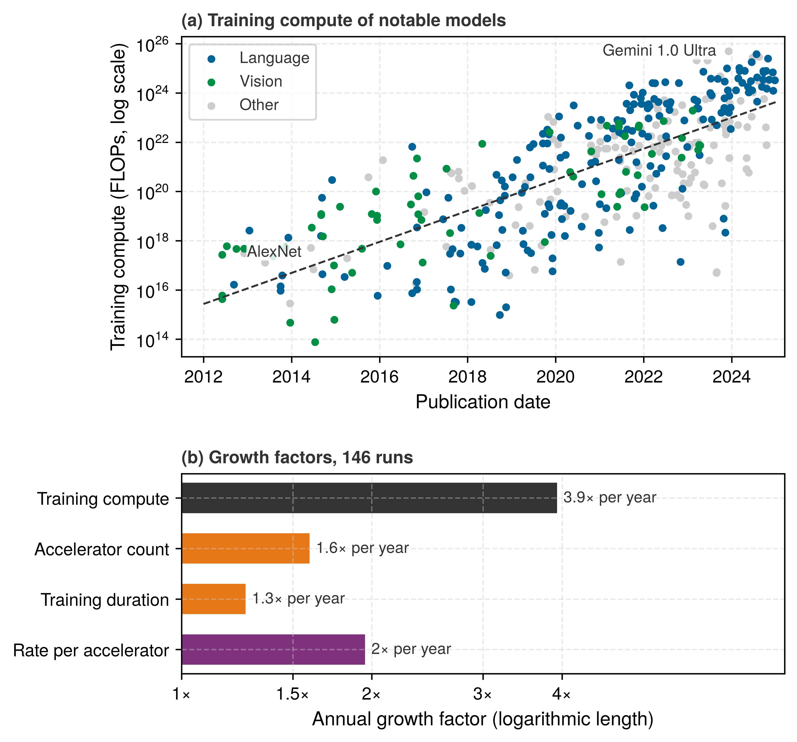
Содержание главы
Содержание
- 1 Введение
- 1.1 Момент масштаба
- 1.2 От одиночного узла к парку
- 1.3 Законы масштабирования ИИ
- 1.3.1 Эмпирические свидетельства законов масштабирования
- 1.3.2 Вычислительно-оптимальное распределение ресурсов
- 1.3.3 Степенные законы масштабирования и операционные режимы
- 1.3.4 Устойчивость и стоимость
- 1.3.5 Когда законы масштабирования перестают работать
- 1.3.6 Соединение эффективности с масштабированием
- 1.4 Ограничения масштаба
- 1.5 Таксономия C
и основы масштаба - 1.6 Стек парка и маяковые архетипы
- 1.7 Структура этого учебника
- 1.8 Заблуждения и ловушки
- 1.9 Итоги
1 Введение
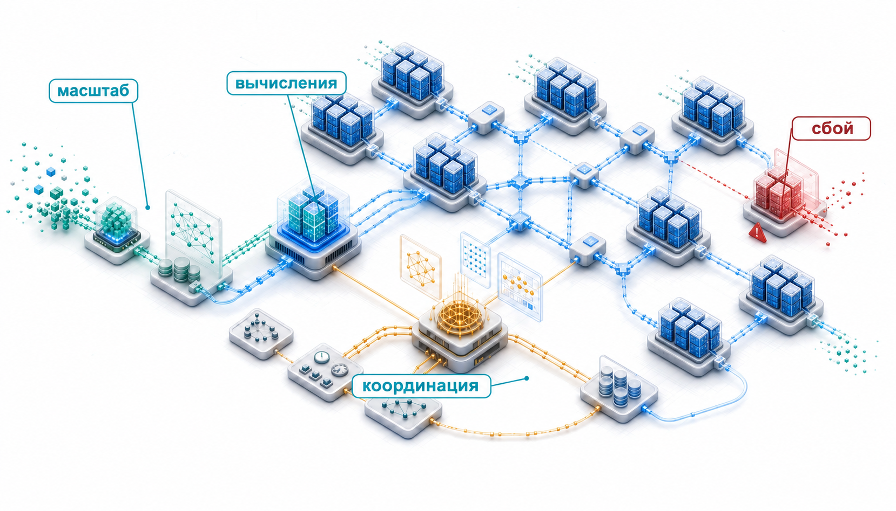
Назначение
Почему инженерные принципы для одной машины недостаточны для машинного обучения в масштабе парка?
Машинное обучение в масштабе подчиняется собственной физике. На одном узле производительность чаще всего определяется стеной памяти: данные должны поступать на ускоритель достаточно быстро, чтобы вычисления не простаивали. Законы масштабирования объясняют, почему одного узла перестаёт хватать: качество модели растёт предсказуемо, но сублинейно с вычислениями, данными и параметрами, поэтому каждый следующий выигрыш требует всё большего парка. В распределённом кластере проблема памяти растягивается на множество машин. Данные должны перемещаться по сетевым каналам между стойками, и самое медленное общее пересечение может ограничить всю задачу целиком. Аппаратные отказы тоже меняют характер. Сбой, останавливающий один локальный запуск обучения, может остановить целую распределённую задачу, когда тысячи работников должны продвигаться синхронно. Этот разрыв объясняет, почему владения одномашинным ML уже недостаточно. Более быстрое устройство может раньше завершить свою локальную работу, лишь чтобы потратить сэкономленное время на ожидание других машин. Добавление устройств способно нарастить ёмкость, одновременно порождая больше общей работы по координации и больше компонентов, требующих восстановления. Обслуживание моделей добавляет ещё одно следствие: резервная ёмкость полезна, только если запросы успевают до неё дойти в пределах своих сроков. Поэтому инженерное решение должно учитывать поведение всего парка. Эта расширенная граница усиливает и общественное влияние, поскольку такие системы могут обслуживать миллиарды пользователей. Смещение в любой модели способно причинить вред, но смещение в широко используемой фундаментальной модели может распространиться на множество нижележащих систем. В терминах C³ вычисления, коммуникация и координация превращают алгоритмические решения в вопросы физической топологии, отказоустойчивости, безопасности и управления.
Цели обучения
- Объяснить, почему переход от одной машины смещает определяющее ограничение с локальной памяти на сеть, энергию и рутинные отказы
- Объяснить, как эмпирические законы масштабирования стимулируют рост парка и где условия пробоя ограничивают compute-оптимальное распределение ресурсов
- Диагностировать риски распределения в масштабе парка с помощью синхронной жёсткой связанности, разрывов надёжности, компромисса согласованность–доступность и интенсивности коммуникаций
- Объяснить, как Вычисления, Коммуникация и Координация расширяют призму Данные–Алгоритм–Машина для производственных парков
- Применить «Закон парка» (Fleet Law) для отделения полезных вычислений шага обучения от накладных расходов на коммуникацию и координацию
- Объяснить, как стек парка связывает инфраструктурные решения с ограничениями развёртывания и управления
1.1 Момент масштаба
Машинное обучение на одном ускорителе определяется локальной иерархией памяти и арифметической интенсивностью — физикой кремния. Граница одномашинных систем проявляется тогда, когда локальная машина перестаёт быть всей системой. По мере превращения моделей из исследовательских прототипов в глобальные сервисы определяющие ограничения смещаются наружу — в стойки, сети, электропитание и механизмы восстановления. Это изменение не является плавной экстраполяцией; это момент масштаба, физическая и операционная трансформация, происходящая при столкновении модели с тремя повторяющимися стенами: памятью, сетью и энергией.
На одном ускорителе связывающим ограничением часто оказывается стена памяти; но после распределения интенсивной по коммуникациям рабочей нагрузки на тысячи узлов стену сети локальная память может заменить в качестве главного узкого места производительности. Её жёсткие пределы — задержка на скорости света и бисекционная пропускная способность, суммарная полоса через самое узкое сечение, разделяющее парк на две равные половины. На заданном fabric (сеть межсоединений) добавление работников не поднимает этот предел, поэтому тесно связанная задача, чей трафик должен пересекать сечение, перестаёт ускоряться, как только сечение насыщается. Обслуживание миллиардов пользователей круглосуточно может затем столкнуться со стеной энергии, пределом того, какую мощность объект может подвести и отвести в виде тепла, что делает термодинамическую эффективность инженерным требованием первого порядка. Преодоление этих стен открывает также разрыв надёжности, превращая аппаратный отказ из редкого исключения в рутинное событие.
Синхронный распределённый шаг обучения придаёт этому изменению конкретную форму. Каждый работник вычисляет часть обновления, обменивается информацией о модели с другими работниками и ждёт, пока все необходимые участники смогут продвинуться вместе. Эти виды деятельности задают призму C
Эта книга предполагает знакомство с одномашинным обучением, инференсом и памятью ускорителей. Читателям, желающим освежить эту базу, стоит начать с Одномашинные основы, где она изложена в справочной форме. Приложение охватывает призму Данные · Алгоритм · Машина (D·A·M), организующую одномашинную диагностику, железный закон, модель «крыши» (Roofline) и её границу арифметической интенсивности, иерархию памяти ускорителя, стоимость памяти состояния обучения на параметр и арифметику слоёв трансформера.
Цель книги — развить инженерное суждение в области инфраструктуры, распределённого исполнения, развёртывания и управления, чтобы локальное улучшение можно было оценивать относительно поведения всего парка. Эта глава выстраивает такое суждение в том порядке, в каком с проблемой сталкивается инженер парка. Сначала она прослеживает, насколько выросли вычисления для обучения и размер кластеров и что меняется, когда задача покидает одну машину. Затем она обращается к эмпирическим законам масштабирования, которые продолжают стимулировать этот рост, к физическим, логическим и общественным ограничениям, которые накладывает распределение, и к таксономии C
Между 2012 годом и серединой 2020-х публичные и сторонние оценки помещают рост вычислений для обучения примерно от
Этот рост разворачивался через последовательность знаковых моделей. AlexNet обучалась на двух GTX 580 GPU примерно 5–6 days (Krizhevsky и др. 2012 г.). BERT потребовал 64 тензорных процессоров (TPU)1 в течение 4 days, примерно 6,144 chip-часов (Devlin и др. 2019 г.).
На обучение GPT-3, по оценкам, было израсходовано 3.14 × 10²³ FLOPs (Brown и др. 2020 г.). Одна A100 — ускоритель на поколение новее, чем V100, на которых модель обучалась, — выполнила бы эту работу примерно за 32 лет даже на пиковых 312 TFLOP/s, и это самый прямой ответ на вопрос, почему одного узла больше недостаточно. Последующий углеродный учёт этого запуска дополняет бюджет: 10,000 V100 GPUs, поддерживавшие около 24.6 TFLOP/s каждый (примерно 20 percent пиковой скорости вычислений V100) в течение примерно 15 days обучения (Patterson и др. 2021 г.). Разрыв между этой фактически достигнутой скоростью и пиком из спецификации поднимает вопрос, к которому эта книга будет возвращаться снова и снова: какую долю каждого ускорителя парк действительно использует.
PaLM обучался на 6,144 чипах TPU v4 в течение 50 days, а затем ещё 14 days на 3,072, израсходовав приблизительно
| Модель | Год | GPU/TPU | Время обучения | Оценка FLOPs |
|---|---|---|---|---|
| AlexNet | 2012 | 2 GPUs | 5–6 days | ~ |
| BERT-Large | 2018 | 64 TPUs | 4 days | ~ |
| GPT-3 | 2020 | 10,000 V100 GPUs (оценка запуска) | ~15 days | 3.14 × 10²³ FLOPs |
| PaLM | 2022 | 6,144 TPUs | ~64 days | ~ |
| Сценарий класса GPT-4 | 2023 | ~25,000 GPUs (иллюстративно) | ~100 days (иллюстративно) | ~ |
База данных Epoch AI по примечательным моделям фиксирует для каждого документируемого обучающего запуска израсходованные вычисления вместе с количеством использованных ускорителей и длительностью (Epoch AI 2026 г.). Если откладывать запуски по точкам, обучающие вычисления стабильно растут на логарифмической шкале, отделяя ранние одноузловые модели компьютерного зрения от многоузлового обучения трансформеров (Рисунок 1, панель a). Поскольку обучающие вычисления — это произведение числа ускорителей, длительности обучения и скорости, которую выдаёт каждый ускоритель, те же записи показывают, откуда пришёл рост. По 146 запускам с 2012 по 2024 год, для которых известны все три величины, вычисления росли примерно в 3.9× в год. Число ускорителей росло в 1.6× в год, длительность — в 1.3×, а достигаемая скорость на ускоритель, объединяющая и более быстрое оборудование, и лучшую утилизацию, — в 2× (Рисунок 1, панель b). Более высокая достигаемая скорость на ускоритель обеспечила примерно половину этого роста. Остальные 51 percent дала работа большего числа ускорителей в течение большего времени, и эта доля может прийти только от парка, а не от любого отдельного ускорителя.
Точки языковых моделей отрываются от точек моделей компьютерного зрения, потому что потребности в вычислениях резко возросли, когда архитектуры трансформеров вытеснили свёрточные конвейеры. Крупнейшие передовые запуски наращивали число ускорителей быстрее среднего запуска — примерно удваивая его каждый год (Рисунок 2), — темп, который быстро превзошёл возможности любого отдельного узла.
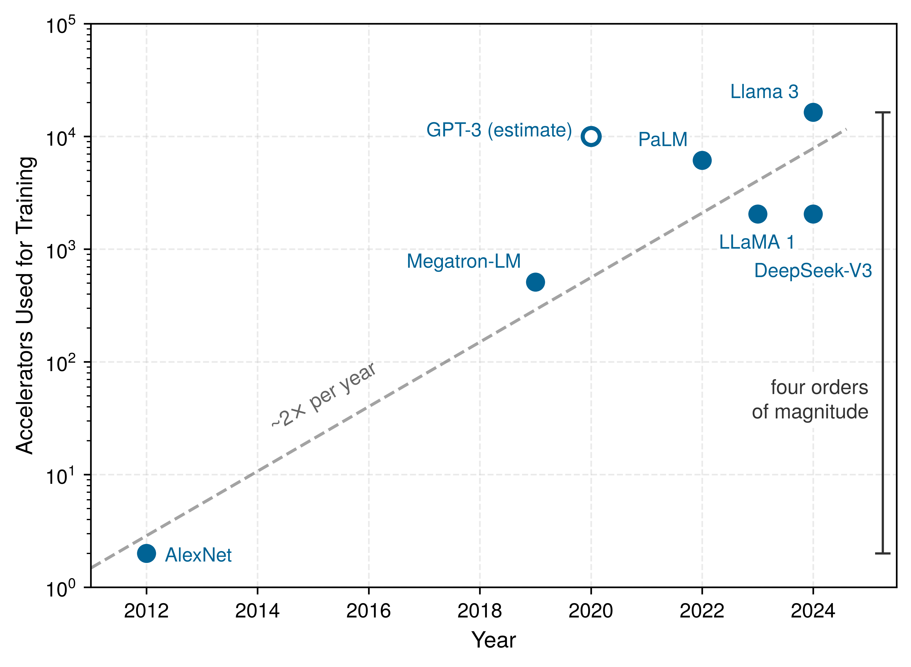
За четыре порядка величины роста, показанные на Рисунок 2, число ускорителей увеличивается от двух GPU для AlexNet до 16,384 H100 GPUs для Llama 3 по траектории ежегодного удвоения (
Опорный пример 1.1: Маячные архетипы в масштабе
Маячные архетипы — канонические рабочие нагрузки, которые делают момент масштаба конкретным на протяжении всей книги. Их роль здесь — показать, что «больше машин» — это не одна инженерная задача, потому что доминирующее ограничение зависит от того, что должно пересекать границу парка. Полный перечень с отображением на таксономию C
Эти архетипы превращают кривую роста в инженерный вопрос. Одно и то же увеличение числа ускорителей может породить сетевую стену для большой языковой модели, разделённой между устройствами, — либо внутри каждого слоя (тензорный параллелизм), либо путём назначения последовательных групп слоёв разным устройствам как стадий конвейера (конвейерный параллелизм). Оно может породить узкое место координации для рекомендательной модели, чьи таблицы эмбеддингов, отображающие каждого пользователя и каждый товар в вектор, распределены по сотням узлов, так что каждый запрос должен направлять свои разреженные выборки на множество узлов, хранящих его строки. Оно может породить и потолок вычислений на устройстве для федеративного обучения, которое тренируется на миллионах телефонов, не собирая их сырые данные, и потому выводит задачу за пределы дата-центра.
↪ Параллелизм по данным, тензорный и конвейерный параллелизм, а также нагрузку, которую каждый из них создаёт на сетевом fabric, разбираем в Распределённое обучение.
↪ Федеративные раунды на миллионах устройств, где связывающими оказываются отсевы, отстающие устройства и бюджеты каждого устройства, разбираем в Федеративное обучение в масштабе.
Переход от одной машины ко многим меняет определяющую физику системы, а не только число устройств. Одиночный узел локально ограничен стеной памяти между его ускорителями и их высокоскоростной памятью, и ему нечего ждать от соседей. Парк исполняется поверх общего сетевого fabric под управлением планировщика, который размещает и восстанавливает задачу, — это подвергает рабочую нагрузку сетевой стене, отстающим устройствам и рутинным отказам узлов (Рисунок 3).
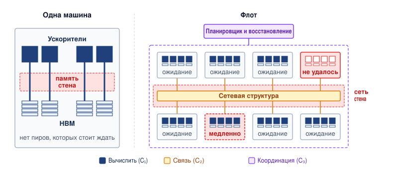
В масштабе парка связывающее ограничение может сместиться с локального кремния на сетевой fabric, а отказоустойчивость становится наряду с оптимизацией первостепенной задачей. Единицей вычислений больше не является отдельный сервер, а парк машинного обучения — взаимосвязанная распределённая система, спроектированная действовать как согласованный движок.
Определение 1.1: Парк машинного обучения
Парк машинного обучения — распределённая совокупность вычислительных устройств, хранилищ и сетей, управляемая совместно для обучения или обслуживания моделей машинного обучения.
- Значимость: в тесно связанном синхронном обучении общее время
может определяться самым медленным исполнителем (отстающим устройством, straggler). Поддержание такой нагрузки требует балансировать бисекционную пропускную способность ( ) с суммарной вычислительной мощностью ( ). Парки для обслуживания и гетерогенные парки на границе сети предъявляют иные требования к коммуникации и координации. - Отличие: парк — единица проектирования, но его исполнители не обязаны продвигаться синхронно. Синхронная тесная связанность делает обучающую задачу зависимой от общего барьера шага; обслуживающие реплики могут обрабатывать отдельные запросы, а федеративные устройства — участвовать эпизодически. Рабочая нагрузка определяет требуемую связанность и поведение восстановления.
- Типичная ошибка: отношение к МЛ-парку как к «просто ещё серверам» упускает общие сетевые ограничения, размещение и восстановление. Тесно связанный парк в дата-центре ведёт себя как одна машина — компьютер складского масштаба из Глава 1.2.2; парк на границе сети расширяет инженерную границу до устройств вне управляемого объекта.
В масштабе тысяч GPU проявляются режимы отказа, с которыми одиночный GPU никогда не сталкивается. Разделение сети (отказ, разбивающий парк на группы, которые не могут связаться друг с другом) может оставить синхронную задачу висящей на коллективной операции (операции, такой как обмен градиентами, к которой должен присоединиться каждый исполнитель) до тайм-аута, прерывающего её, а в слабо синхронизированных дизайнах может позволить группам исполнителей разойтись. Отстающие устройства (исполнители, обрабатывающие данные медленнее соседей из-за вариации аппаратуры или троттлинга из-за нагрева) могут стать узким местом целого обучения. Даже редкие отказы компонентов накапливаются в большом парке, поэтому долгие обучающие задачи должны ожидать прерываний.2 Системы должны сохранять восстанавливаемое состояние достаточно часто, чтобы ограничить потерянную при каждом прерывании работу.
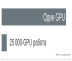
Задача на 25 000 GPU отказывает в 25 000 раз чаще, чем один GPU.
Частота прерываний следует из простой арифметики. Рассмотрим гипотетическое обучение уровня GPT-4 на аппаратуре A100-class — кластере из 25,000 GPUs, работающем 100 days; эти значения следуют сторонней оценке (Patel и Wong 2023 г.), а не раскрытию OpenAI (OpenAI и др. 2023 г.). При предполагаемом среднем времени наработки на отказ одного GPU (MTTF) в 50,000 hours и независимости отказов системное среднее время между отказами (MTBF) равно MTTF одного GPU, делённому на число GPU, — около 2 hours, то есть примерно 12 прерываний в день.
↪ Арифметика частоты отказов, превращающая MTTF устройства в частоту прерываний задачи и сверенная с производственными записями об отказах, развёрнута в Математика неизбежных отказов.
Производственные запуски показывают схожую частоту. Предобучение Meta Llama 3 405B на 16,384 H100 GPUs зафиксировало 419 непредвиденных прерываний за 54-day снимок — примерно одно каждые 3 hours, — из-за программных, сетевых и хостовых сбоев наряду с отказами GPU (Dubey и др. 2024 г.). При такой частоте задача, сохраняющая состояние лишь раз в несколько часов, часто прерывалась бы до следующего сохранения, а ручной перезапуск не успевает, поэтому восстановление должно быть автоматизировано и заложено в систему с самого начала (Расчёт MTBF кластера показывает, как восстанавливался этот запуск).
Организации ответили на эти вызовы специализированными парками, чей определяющий компонент — сеть не меньше, чем ускоритель. Исследовательский суперкомпьютер Meta (Research SuperCluster), анонсированный в 2022 году, был рассчитан достичь 16,000 GPU NVIDIA A100, соединённых линиями InfiniBand3 200 Gb/s (AI 2022 г.). Поды Google TPU v4 объединяют 4,096 chips с пиковой суммарной мощностью 1.1 EFLOP/s (Zu и др. 2024 г.). Более поздние анонсы дата-центров Azure AI описывают обучающие fabric из десятков тысяч GPU (Microsoft 2025 г.). Доля каждого ускорителя в этой суммарной мощности должна обмениваться результатами через линии в несколько сотен гигабит в секунду.
Момент масштаба устанавливает, почему экспоненциальный рост требований к вычислениям вынуждает часть МЛ-систем выходить за пределы одной машины, делая сетевой fabric потенциальным узким местом, а отказ компонентов — рутиной на долгих запусках. Следующий вопрос — как организовать инженерный ответ. Устоявшиеся техники распределённых систем остаются необходимыми, но глобальные барьеры и большое разделяемое состояние модели меняют их стоимость и определяют, какие механизмы восстановления и согласованности применимы. Проследить эти изменения — значит проследить, как слои одной машины отображаются на парк, начиная с того, насколько резко линии между серверами уступают пропускной способности внутри одной машины.
1.2 От одиночного узла к парку
Внутри одного сервера H100 NVLink перемещает тензоры между ускорителями со скоростью 450 GB/s в каждом направлении на ускоритель. Когда задача обучения выходит за пределы стоек, те же тензоры уходят через порт InfiniBand NDR со скоростью 400 Gb/s (50 GB/s) в каждом направлении, то есть пропускная способность падает примерно в 9× для ускорителя, обслуживаемого одним таким портом. Этот шаг иллюстрирует общую закономерность: слоистая структура МЛ-системы сохраняется при масштабировании, тогда как физика на каждом слое меняется.
Парк-стек называет слои парка, группируя их в четыре полосы: внизу Infrastructure, затем Distribution, Serving и наверху Governance, по два ряда в каждой полосе (Рисунок 4). Внизу аппаратная основа одного узла разрастается в полосу Infrastructure: ряд Facility and Accelerators охватывает множество узлов, а ряд Fabric and Storage соединяет их fabric RDMA поверх стоек. Именно там связывающее ограничение может сместиться от стены памяти к сетевой стене, поскольку сетевые заторы и задержка передачи сообщений consume всё большую долю времени шага. Эффективное перемещение данных внутри каждого узла остаётся необходимым условием, потому что парк недогруженных узлов лишь умножает потери. На слой выше системное программное обеспечение (единая среда исполнения CUDA, управляющая прямым доступом к памяти через PCIe (DMA)) становится полосой Distribution. Эта полоса содержит библиотеку NVIDIA Collective Communications Library (NCCL) и библиотеки RDMA, координирующие тысячи процессов через fabric, а также планировщики, размещающие распределённые задачи, и механизмы восстановления, перезапускающие их.
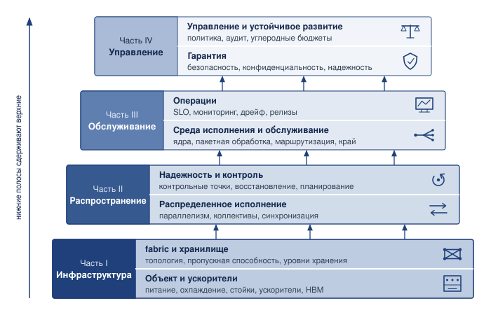
Верхние полосы добавляют обязанности, а не заменяют знакомые программные слои. МЛ-фреймворк (PyTorch или JAX, исполняющие цикл обучения на одном узле) остаётся частью исполнения модели. Полоса Serving добавляет обработку запросов и конвейеры развёртывания, управляющие плавными релизами по всему парку. Приложения тоже остаются, а полоса Governance задаёт требования к их эксплуатации: безопасность, устойчивость, экологичность и ответственный ИИ. Полный стек с его восемью рядами — карта, организующая остальную часть этой книги, — возвращается в Глава 1.6. Стек определяет, к чему относится проектное решение; C
Карта слоёв сама по себе не объясняет, почему одно и то же решение ведёт себя иначе, когда оно выходит на масштаб парка. Четыре изменения отличают парк от большего сервера: синхронная связанность превращает независимые задачи в общий шаг, само предприятие становится компьютером, коммуникация может доминировать в шаге, а отказ становится рутиной. Момент масштаба количественно оценил последнее изменение, а его модель доступности следует вместе с другими ограничениями масштаба в Глава 1.4.1. Архетип A (GPT-4/Llama-3) — рабочая нагрузка больших языковых моделей из канонического списка книги (Глава 1.6.1) — выполняется на референсном кластере ускорителей NVIDIA H100 и делает каждое из этих изменений конкретным там, где это нужно главе.
1.2.1 Независимые задачи и синхронные шаги обучения
Когда один исполнитель в батче MapReduce отказывает или замедляется, планировщик может перезапустить его задачу отдельно, пока остальной кластер продолжает работу. Когда один исполнитель в синхронной задаче обучения замедляется на 10 процентов на критическом пути (цепочке зависимой работы, задающей длину шага), каждый другой ускоритель ждёт у барьера шага, и вся задача замедляется почти на 10 процентов. Многие распределённые системы изолируют работу в задачи или запросы, чтобы один отказ не останавливал несвязанную работу: MapReduce (Dean и Ghemawat 2004 г.) разбивает вход на map-задачи и объединяет их выходы в reduce-задачах, каждая из которых может быть перезапущена; Apache Spark (Zaharia и др. 2016 г.) обрабатывает данные параллельными стадиями, обменивающимися результатами на явных границах shuffle; веб-микросервис обрабатывает запросы, отказы которых можно изолировать. Поисковые системы и банковские СУБД используют иные формы репликации, партиционирования и координации; они не являются целиком независимыми или асинхронными. Поэтому полезное противопоставление — между доменами отказов (что может остановить единичный сбой) и паттернами связанности, а не между «традиционными» и МЛ-системами.
Большие синхронные задачи обучения работают в условиях синхронной тесной связанности, при которой все требуемые исполнители должны завершить один общий шаг, прежде чем любой из них сможет начать следующий. Архитектуры с серверами параметров (Li и др. 2014 г.), хранящие модель на выделенных серверах, и коллективные среды исполнения управляют распределённым состоянием, но синхронная оптимизация обновляет большое общее состояние модели на тысячах ускорителей на каждом шаге, а не выполняет независимые одноразовые задачи. В каждой точке синхронизации прогресс может зависеть от самого медленного участвующего исполнителя, а разделы с интенсивной коммуникацией могут упереться в бисекционную пропускную способность, поскольку большие тензоры градиентов или активаций пересекают сеть на каждом шаге. Эти свойства не отменяют устоявшихся техник восстановления; они повышают его стоимость и ограничивают набор стратегий репликации, повторного исполнения и согласованности, сохраняющих полезный прогресс обучения.
↪ Барьер, заставляющий каждое обновление ждать каждого требуемого вклада, и порождаемые им режимы отказов разобраны в Семантика барьеров и режимы отказа.
Два режима исполнения различаются в точке отказа (Рисунок 5). В MapReduce отказавшая map-задача перезапускается отдельно, пока её коллеги завершаются. В синхронном обучении с параллелизмом по данным каждый исполнитель держит полную копию модели, распределённую по стольким ускорителям, сколько требует состояние обучения, и обрабатывает свой срез каждого батча. Прежде чем произойдёт общее обновление параметров, каждый исполнитель должен внести свой градиент в AllReduce — коллективную операцию, объединяющую градиенты всех исполнителей и возвращающую результат каждому из них. Медленная map-задача может задержать последующую редукцию и завершение задачи, но другие map-задачи завершаются, не дожидаясь; в синхронном же обучении исправные исполнители простаивают всякий раз, когда отстающий задерживает коллективную операцию.
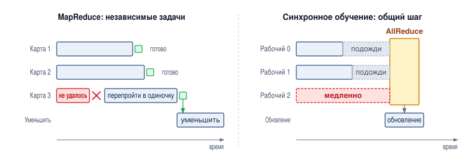
Именно коллективный барьер из Рисунок 5 объясняет, почему локализованный повторный запуск задач в духе MapReduce нельзя напрямую перенести на тесно связанное обучение. Когда все исполнители продвигают один общий шаг параметров, восстановление должно вернуть взаимно согласованные состояния модели, оптимизатора и входных данных на каждом участвующем узле, прежде чем координированное исполнение сможет продолжиться.
↪ Согласованное контрольное точкосохранение (coordinated checkpointing), фиксирующее это взаимно согласованное состояние, чтобы восстановлению не приходилось его искать, разобрано в Шаблоны координации контрольных точек.
Контрольная точка 1.1: Мышление в масштабе парка устройств
Эти вопросы проверяют, ясно ли мышление на уровне парка:
1.2.2 Переход к компьютеру масштаба склада
Когда одна задача обучения охватывает тысячи ускорителей на десятках стоек, контуры охлаждения, распределение питания и бисекционная пропускная способность предприятия могут ограничить пропускную способность шага задолго до того, как какой-либо отдельный чип достигнет предела своих арифметических возможностей. Поэтому тесно связанный парк ЦОД требует перспективы компьютера масштаба склада (WSC)4. Где машина-центричный взгляд рассматривает дата-центр как здание, в котором размещено много отдельных серверов, взгляд масштаба склада рассматривает сам дата-центр как один компьютер. Одноузловые абстракции тогда отображаются прямо на распределённую инфраструктуру: сетевой fabric играет роль системной шины, распределённое хранилище — роль локального диска, а оркестратор парка — роль операционной системы.
Для этого режима дата-центра инженерная граница расширяется от локального исполнения до общих систем питания, сети и восстановления, поддерживающих всё предприятие. Компьютер масштаба склада, стандартный дизайн для больших моделей, перемещает данные между чипами по сети. Ваферные движки, одиночные процессоры, собранные из целого кремниевого вафера, стремятся вместо этого удержать это перемещение на вафере, обменивая модульность кластера на пропускную способность на кристалле (Вычислительные системы размером с пластину). Оба дизайна отвечают на одно и то же ограничение — стоимость перемещения данных между чипами — с противоположных направлений.
1.2.3 Доминирование коммуникации и сетевая стена
На одном GPU плотный шаг обучения держит градиенты в локальной памяти, поэтому умножения матриц доминируют во времени шага, а межузловая коммуникация равна нулю. Когда эта нагрузка выходит за стойки в компьютер масштаба склада, каждый шаг должен обмениваться градиентами или активациями через межсерверные связи, прежде чем параметры смогут обновиться, что может сделать коммуникацию доминирующей стоимостью и обнажить сетевую стену момента масштаба.
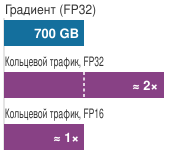
Ring AllReduce перемещает за шаг примерно вдвое больше градиента; 16-битные градиенты сокращают это вдвое.
Распределённое обучение с параллелизмом по данным синхронизирует градиенты между исполнителями после каждого батча. Для модели с 175B параметров градиенты FP32 занимают около 700 GB ещё до применения какого-либо коллективного алгоритма. Ring AllReduce выстраивает обмен AllReduce между соседями в логическом кольце. При
↪ Коммуникационная модель
Доля коммуникации в шаге растёт по мере того, как фиксированная нагрузка распределяется на больше устройств, поскольку локальные вычисления каждого исполнителя сокращаются, а обмен градиентами — нет. По иллюстративным уровням от 8 до 4 096 GPU вычисления могут упасть с 75 процентов времени шага до 20 процентов по мере расширения коммуникации (Рисунок 6). Эти доли — предполагаемые режимы, а не измерения. Размер градиента, локальный размер батча, топология разбиения и перекрытие определяют, где на самом деле лежит критический путь, поэтому его нужно измерять на каждом масштабе.
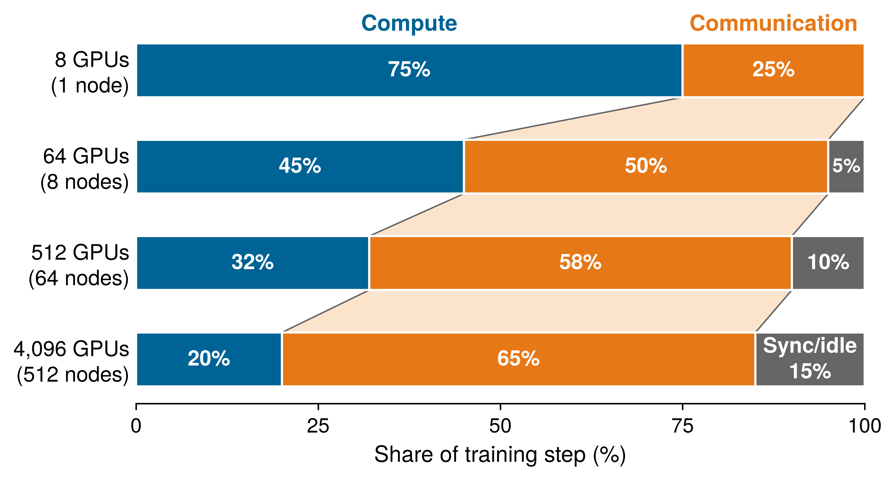
Эта открытая стоимость передачи объясняет, почему системы распределённого обучения столь агрессивно оптимизируют коммуникацию. Распределение работы влечёт и распределение состояния, которое нужно перемещать или поддерживать в согласованном виде. Horovod, например, исполняет Ring AllReduce и сливает множество мелких градиентных тензоров в меньшего числа крупных передач, чтобы фиксированная стоимость запуска каждого обмена оплачивалась меньшее число раз (Sergeev и Balso 2018 г.). Разбиение каждого слоя по устройствам, как делает Megatron-LM с тензорным параллелизмом (Shoeybi и др. 2019 г.), и шардирование состояния оптимизатора по воркерам, как делает ZeRO (Rajbhandari и др. 2020 г.), обменивают память на устройство на иные паттерны трафика. Разреживание градиентов (передача меньшего числа байтов градиентов) и 3D-параллелизм (распределение размерностей данных, тензоров и конвейера по разным уровням fabric сети) меняют объём перемещаемых данных и их направление. Развитием этих методов разбиения занимается Распределённое обучение. Перекрытие передачи независимыми вычислениями, напротив, сокращает открытое время ожидания, не меняя объём перемещаемых байтов. Проектное решение на этом этапе — какая стоимость мешает прогрессу; выбор конкретного механизма требует моделей рабочей нагрузки и fabric, разрабатываемых далее.
1.2.4 Интенсивность коммуникаций (отношение CI)
Если арифметическая интенсивность определяет, где останавливается один ускоритель, то интенсивность коммуникаций (CI) определяет, где останавливается весь парк. На отдельном ускорителе модель «крыши» (Roofline) определяет, ограничен ли яд вычислениями или памятью. В масштабе парка тот же анализ распространяется на сеть.
Уравнение 1 определяет интенсивность коммуникаций как отношение данных, перемещаемых по сети, к операциям, выполняемым локально. Числитель считает байты, а знаменатель — операции для одного и того же воркера и интервала, например одного шага обучения; поэтому отношение имеет размерность байт на операцию.
где
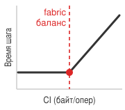
За точкой баланса fabric время шага растёт с ростом интенсивности коммуникаций.
Низкая интенсивность коммуникаций описывает рабочие нагрузки, тяжёлые по вычислениям, где ускорители большую часть времени занимаются математикой, поэтому масштабирование сравнительно простое. Высокая интенсивность коммуникаций описывает рабочие нагрузки, у которых байтов на операцию приблизительно столько же или больше, чем допускает баланс fabric оборудования — отношение пропускной способности сети на воркера к пиковой арифметической пропускной способности. За этой точкой баланса сетевые передачи занимают больше времени, чем сопровождаемые ими локальные вычисления. Баланс fabric играет роль точки изгиба (ridge point) с перевёрнутым отношением: рабочая нагрузка приближается к пределу сети по мере роста её интенсивности коммуникаций, тогда как ядро приближается к пределу памяти по мере падения арифметической интенсивности.
Разбиение фиксированного батча на всё большее число ускорителей уменьшает локальные операции
Эталонная задача на 175B придаёт этому отношению конкретное значение. Глава 1.6.1.1 фиксирует эту задачу как действующий пример архетипа A с 1,024 H100 GPUs, где каждый воркер дата-параллелизма — реплика модели, распределённая по 64 GPU, и глобальный батч из 1,536 последовательностей на шаг. Каждый из 16 реплицируемых экземпляров обрабатывает, таким образом, 96 последовательностей, или 196,608 токенов, за шаг. Разделение трафика и работы реплики между её GPU не меняет отношения, поэтому его можно вычислять на один GPU. Доля каждого GPU в работе составляет около шести FLOPs на параметр на токен — два в прямом проходе и четыре в обратном (Уравнение (4)), то есть
Распространение той же задачи на 8,192 GPU приближает её к пределу. При фиксированном глобальном батче каждый из 128 реплицируемых экземпляров обрабатывает лишь 12 последовательностей за шаг, так что локальная работа каждого GPU сокращается во столько же раз, во сколько растёт кластер — в 8×, — до
↪ Отношение коммуникаций к вычислениям и порог, за которым коммуникация больше не может скрываться за вычислениями, разрабатываются в Отношение коммуникации к вычислениям.
Стоимости коммуникаций вместе со стоимостями восстановления, количественно определёнными в момент масштабирования, описывают то, как парк исполняет работу. Но ни одно из них не объясняет, что движет неуклонным ростом размера парка или какой объём работы должна получать модель. Оба ответа кроются в эмпирических связях между качеством модели и вложенными ресурсами — связях, которые сделали инфраструктуру масштаба склада экономической необходимостью, а не инженерной роскошью.
1.3 Законы масштабирования ИИ
Семь-восемь порядков величины вычислений обучения, прослеженных в момент масштабирования — от AlexNet до оценок класса GPT-4 около
«Горький урок» Рича Саттона сформулировал лежащий в основе принцип: производительность в машинном обучении в первую очередь определяется применением общих методов в крупном масштабе, а не кодированием человеческих знаний в алгоритмы (Sutton 2019 г.). Законы масштабирования формализуют это наблюдение количественно. Потери модели улучшаются сублинейно как степенная функция вычислений, размера набора данных и параметров:
1.3.1 Эмпирические свидетельства законов масштабирования
На более длинной истории развития ИИ темп роста вычислительных затрат на обучение резко ускорился примерно в 2010 году (Sevilla и др. 2022 г.). Аппроксимация по записям Epoch AI о заметных моделях даёт рост примерно в 1.5× в год до 2010 года — близко к закону Мура — и примерно в 4.3× в год в эпоху глубокого обучения (Рисунок 7). Ранее уже проводилась декомпозиция этого пост-2012 роста на количество ускорителей, длительность запуска и достигаемую скорость на один ускоритель (Рисунок 1, панель b); более низкий темп этой декомпозиции — около 3.9× в год — получается при аппроксимации только тех запусков с 2012 по 2024 год, для которых известны все три фактора. Когда потребность в вычислениях настолько опережает закон Мура, ошибочное распределение бюджета обучения становится непозволительно дорогим, превращая эмпирические законы масштабирования из предмета исследовательского любопытства в инженерную необходимость.
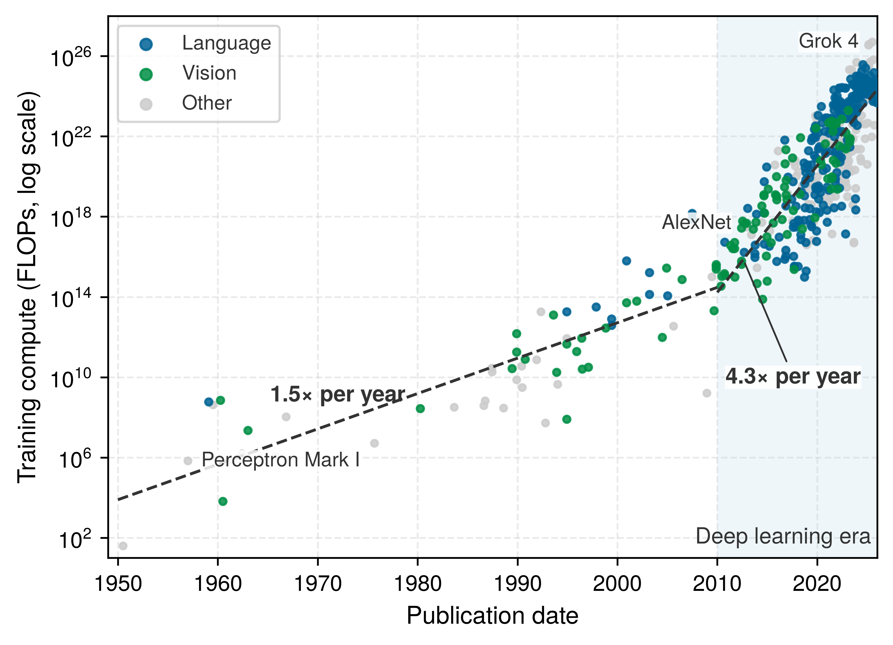
Kaplan и др. (2020 г.) показал, что ошибка языковых моделей на основе трансформеров подчиняется предсказуемым степенным зависимостям от числа параметров модели, размера набора данных (измеряемого в токенах) и общего вычислительного бюджета. Этот результат не был разрешением слепо увеличивать каждое из измерений; он показал, что качество модели зависит от согласованного распределения ресурсов, что позже было уточнено вычислительно-оптимальным анализом масштабирования Chinchilla (Hoffmann и др. 2022 г.).
В диапазоне масштабов параметров от
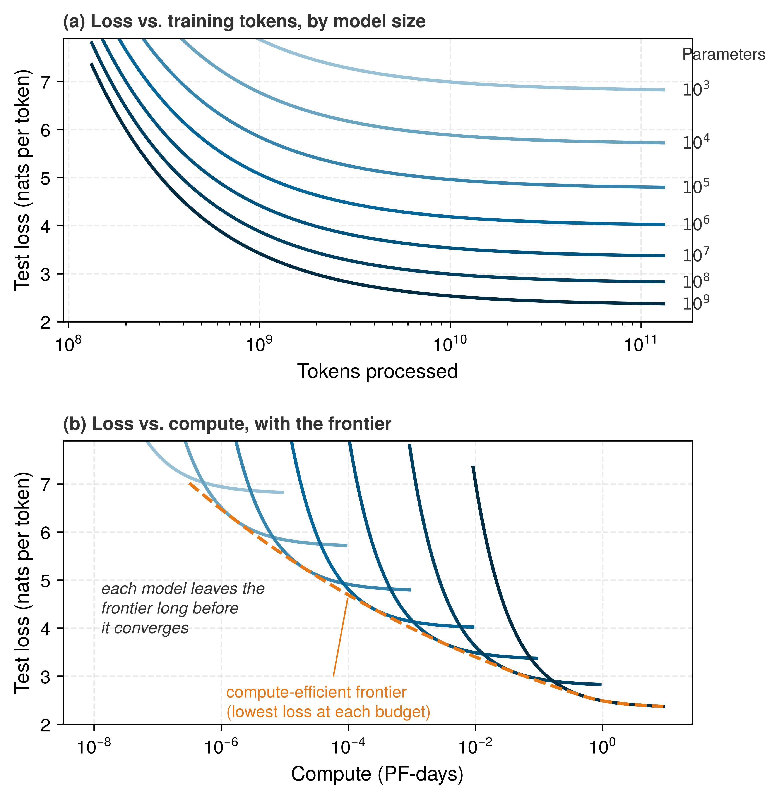
Поскольку каждое равное улучшение ошибки обходится непропорционально дороже, распределение ресурсов становится тем значимее, чем больше бюджет. Вопрос в том, как разделить бюджет между размером модели и объёмом обучающих данных, которые она потребляет.
1.3.2 Вычислительно-оптимальное распределение ресурсов
Команда, которая начинает со сбалансированного распределения и тратит тот же бюджет на вычисления для обучения на модель вдвое большего размера с вдвое меньшим числом обучающих токенов,5 получает модель с большей ошибкой, которая к тому же требует вдвое больше памяти и пропускной способности при обслуживании. Эмпирические исследования больших языковых моделей (LLM) показывают, что при фиксированном вычислительном бюджете и в рамках изученного режима масштабирования баланс размера модели и размера набора данных минимизирует ошибку обучения.
Если зафиксировать бюджет и варьировать размер модели так, что бо́льшая модель получает меньше токенов, получается U-образная кривая IsoFLOP — зависимость loss на обучении от числа параметров, чья «долина» отмечает оптимальный размер модели для данного бюджета FLOPs (Рисунок 9, панель a). По мере роста бюджета долина смещается к бо́льшим моделям, а оптимальное число параметров и оптимальное число обучающих токенов возрастают согласно согласованным степенным законам (панель b), так что compute-optimal обучение продвигает размер модели и объём токенов в связке. Спроецированные на бюджет Gopher — более ранней языковой модели DeepMind — аппроксимации требуют 63B параметров, обученных на 1.4T токенах, то есть около
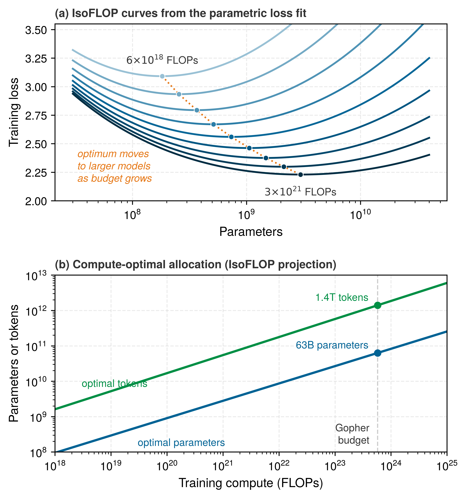
В пределах исследованного режима результат Chinchilla указывает, что для compute-optimal обучения размер модели и обучающие токены должны масштабироваться приблизительно пропорционально, с соотношением порядка 20 обучающих токенов на параметр (Hoffmann и др. 2022 г.). Распределение — это компромисс вдоль фиксированного произведения. Обучение плотного трансформера стоит около
При выборе размера GPT-3 авторы использовали экстраполяции законов масштабирования, чтобы определить размер модели и объём обучающих данных (Brown и др. 2020 г.; Kaplan и др. 2020 г.). Они обучили устоявшуюся архитектуру трансформера с 175B параметрами приблизительно на 300 billion токенах — около 1.7 токенов на параметр. По сравнению с примерно 20 токенами на параметр более поздних результатов Chinchilla эта точка была недообучена относительно compute-optimal распределения токенов (Hoffmann и др. 2022 г.).
Практическое решение состоит в том, как разделить фиксированный бюджет между размером модели, данными и длительностью обучения, и compute-optimal распределение отвечает на этот вопрос только в терминах полезной вычислительной работы. Преобразование этой работы в затраченное время требует отдельной системной модели. Коммуникации могут расти относительно вычислений на одного работника по мере более мелкого разбиения фиксированной рабочей нагрузки, порождая узкие места по пропускной способности, снижающие эффективную утилизацию. В масштабе нескольких тысяч GPU утилизация зависит от разбиения и межсоединений. Narayanan и др. (2021 г.) сообщают о запусках Megatron-LM на 3,072 A100 GPUs с 52 percent пиковой пропускной способности устройства и отмечают, что более медленные межсоединения или разбиения с интенсивными коммуникациями затрудняют масштабирование.
1.3.3 Степенные законы масштабирования и операционные режимы
Даже когда кластер поддерживает высокую утилизацию на compute-optimal запуске, масштабирование параметров и токенов в lockstep работает лишь до тех пор, пока оба ресурса остаются доступными, а кривая loss держится значительно выше своего неустранимого пола. Этот пол, не учтённый в степенном законе в его формулировке с «горьким уроком», объясняет, почему один и тот же парк может входить в разные операционные режимы. Приведённый ниже анализ проводит три сечения через эти режимы, каждое со своим последствием для парка. Первое сечение — как распределяются вычисления и данные, что определяет следующий ресурс для закупки. Второе — где наступает убывающая отдача с ростом размера датасета, что определяет, когда хранилища и конвейеры данных важнее ускорителей. Последнее — в какой момент жизненного цикла модели тратятся вычисления, что определяет, какая часть парка — обучение или обслуживание — несёт нагрузку.
Теорема 1.1: Формулировка степенного закона масштабирования
Законы масштабирования формально выражаются как степенные зависимости. Общая формулировка такова:
где loss
Для парка показатель степени — это прайс-лист. Чтобы вдвое уменьшить сокращаемый член
Режимы масштабирования при ограниченных ресурсах
Первое сечение следует за тем, какой ресурс заканчивается. Плато ёмкости показывают, почему сбор всё новых токенов для проекта, чей кластер не может обучить бо́льшую модель, оставляет данные лежать в хранилище. Противоположный дисбаланс — покупка новых ускорителей для проекта, чей датасет уже исчерпан, — напротив, рискует потратить железо на переобучение. Применение законов масштабирования на практике — это, следовательно, диагностика дефицита, спрашивающая, какой ресурс первым мешает сбалансированному росту. Бюджет вычислений, доступность данных и размер модели создают три режима с различными оптимальными ответами.
В режиме, ограниченном вычислениями, дефицит вычислений ограничивает потенциал масштабирования при изобилии обучающих данных; измеренные кривые обучения направляют распределение между размером модели и обучающими токенами внутри этого бюджета. В режиме, ограниченном данными, вычислительные ресурсы превышают то, что может поддержать доступный датасет, то есть увеличение размера модели полезно, лишь если измерения на валидации показывают, что имеющиеся данные способны поддержать дополнительную ёмкость. Между этими крайностями лежит оптимальный режим, где вычисления и данные растут сбалансированно в соответствии с compute-optimal законами масштабирования — как продемонстрировала DeepMind с Chinchilla, превзойдя куда более крупные модели за счёт пропорционального масштабирования размера модели и обучающих данных (Hoffmann и др. 2022 г.). Распознавание того, какой режим управляет данным проектом, предотвращает типичные неэффективности: переизбыточные по параметрам модели при недостатке обучающих данных или недоизбыточные модели, транжирящие доступные вычисления. Для парка диагностика решает, куда пойдёт следующая инвестиция. Проекту, ограниченному вычислениями, нужны ускорителе-часы, а проекту, ограниченному данными, — больше пользы принесут хранилища и конвейеры данных из Хранение данных, чем дополнительные ускорители.
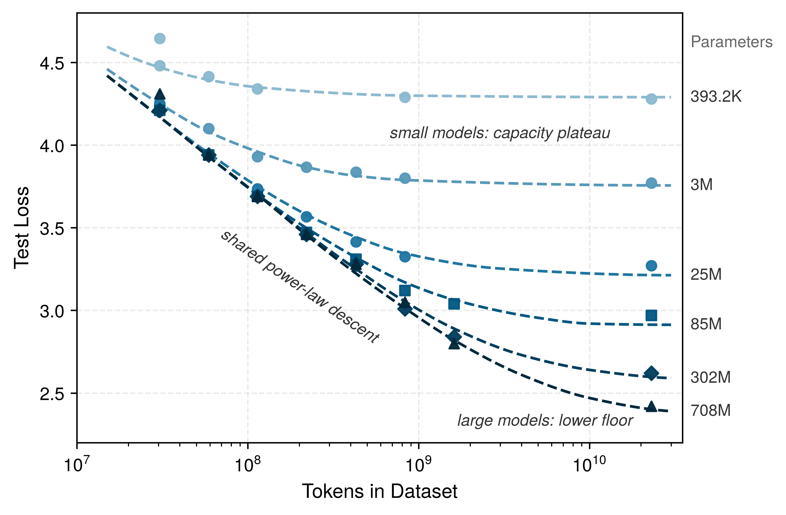
Второй срез операционных режимов прослеживает отдачу от дополнительных данных по мере роста датасета — именно она определяет, когда покупка данных перестаёт окупаться. В логарифмических координатах масштабирование датасета проходит через три области (Рисунок 11). В начальной области малых данных ошибка обобщения держится вблизи верхней границы — ошибки «наилучшего предположения» (Best Guess Error), то есть ошибки модели, которая почти ничему не научилась по своим данным. По мере расширения объёма данных в центральную степенную область ошибка резко падает вдоль постоянного наклона, где вложения в данные дают предсказуемую отдачу. Наконец, в области неустранимой ошибки кривая асимптотически выходит на плато у уровня шума Байеса, где дальнейшее расширение датасета даёт пренебрежимо малый выигрыш. Этот уровень — ошибка, которая остаётся даже у идеального предиктора, потому что входы не полностью определяют метки. Системный следствие зависит от области. В степенной области связывающим ограничением может стать конечный объём качественных данных, а не вычисления, — поэтому эффективность использования данных дополняет масштабирование «в лоб». В области неустранимой ошибки дополнительные данные того же рода перестают окупаться.
↪ «Стена данных» и трафик хранения, который несёт парк при генерации, фильтрации и версионировании синтетических обучающих данных, рассматриваются в Синтетическая топливная линия.
Однако наблюдаемое плато само по себе ещё не доказывает, что достигнут неустранимый уровень. Ограниченный охват, недостаточная ёмкость модели и незавершённая оптимизация тоже могут выровнять кривую обучения, поэтому инженерная задача — исключить эти устранимые ограничения, прежде чем покупать больше данных или вычислений.
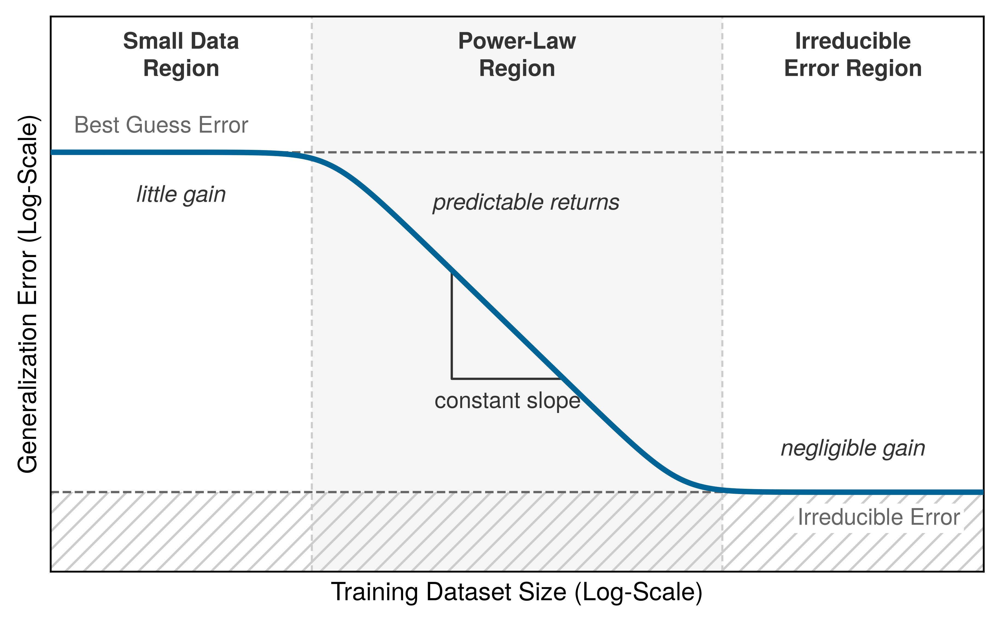
Третий срез следует стадиям жизненного цикла, потому что дополнительные вычисления можно потратить на базовый прогон, на последующую адаптацию модели или на каждый запрос при развёртывании (Рисунок 12). Масштабирование предобучения (оранжевая кривая) увеличивает вложение ресурсов в базовый прогон. Пост-тренинг масштабирование (синяя кривая) адаптирует существующую модель через дообучение (fine-tuning) или оптимизацию предпочтений (обучение на человеческих рейтинговых оценках её выходов). Масштабирование на этапе инференса (зелёная кривая, «долгое размышление») тратит дополнительные вычисления на конкретный запрос через промежуточную генерацию (выписывание шагов рассуждения до ответа), поиск или сэмплирование, обменивая задержку (latency) и пропускную способность обслуживания на возможный прирост качества. Каждая фаза нагружает разные части парка. Предобучение — это один длинный чувствительный к сбоям базовый прогон, чьи выигрыши по законам масштабирования должны быть реализованы в реальном времени. Пост-тренинг заменяет этот единственный большой job множеством меньших, требующих координации прогонов. Масштабирование на этапе инференса переносит вычисления в путь обслуживания, где они конкурируют с целевыми показателями задержки. Схематичные кривые не устанавливают универсального рейтинга эффективности между этими выборами, поэтому полные разборы относятся к своим рабочим нагрузкам. Вычисления на этапе инференса при обслуживании рассматриваются в Вычисления на этапе тестирования и бюджет на запрос. План ресурсов должен сравнить измеренные улучшения задачи и затраты, прежде чем выбирать, куда вложить следующую порцию вычислений.
↪ Мульти-модельная координация, которую требуют прогонов пост-тренинг выравнивания, рассматривается в Проблема координации нескольких моделей.
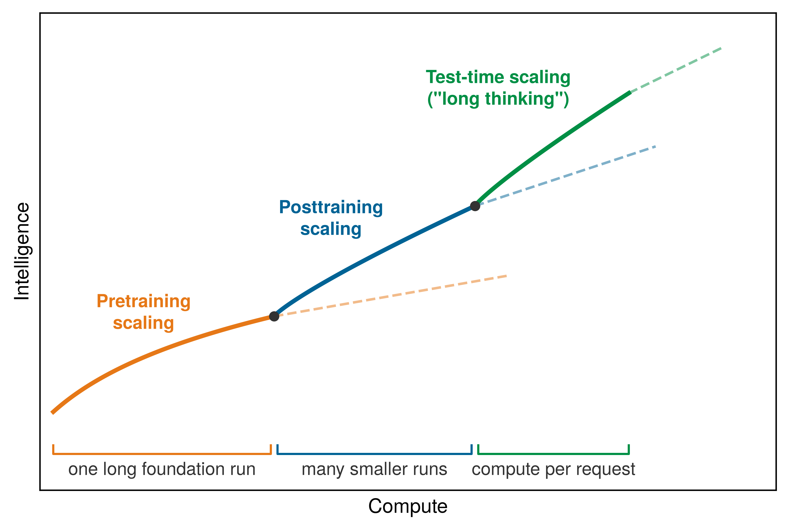
1.3.4 Устойчивость и стоимость
Один лишь прогон обучения GPT-3 занял около 148,000 GPU-дней и, по оценкам, потребил 1,287 MWh электроэнергии (Patterson и др. 2021 г.), а более поздние передовые прогоны используют больше ускорителей и дольше. Пока законы масштабирования указывают путь к более низкой потере, они же вскрывают стремительно растущие потребности в ресурсах, чьи затраты на обучение и развёртывание растут быстрее, чем приобретаемый прирост качества.
Где именно генерируется электричество, важно не меньше, чем его количество. Один и тот же прогон обучения может различаться примерно в 41× по выбросам CO2 в зависимости от расположения энергосети — от примерно 20 g/kWh CO2 на гидроэнергетике Квебека до примерно 820 g/kWh на угольной энергетике Польши. Поэтому размещение кластера — инфраструктурное решение первого порядка. Финансовая стоимость масштабируется теми же ускорителя-днями и мегаватт-часами, что ограничивает, кто вообще может проводить крупномасштабные исследования.
↪ Как выбор площадки и углеродоёмкость энергосети региона определяют выбросы одного и того же обучающего прогона, рассматривается в Масштаб экологического воздействия.
Законы масштабирования не гарантируют безграничного улучшения. Каждый прирост производительности приходится соизмерять с его ресурсной стоимостью. По мере приближения к практическим пределам масштабирования акцент смещается с масштабирования как такового на эффективное масштабирование: балансирование производительности, стоимости, энергопотребления и воздействия на окружающую среду.7
1.3.5 Когда законы масштабирования перестают работать
Удвоение числа параметров модели без расширения обучающего датасета или пропускной способности интерконнекта может остановить снижение потерь, даже если стоимость кластера удвоится: степенные аппроксимации справедливы лишь внутри сбалансированного режима, в котором они были измерены. Большинство сбоев на границе этого режима имеют одну общую причину — рост в одном измерении, опережающий остальные. Hoffmann и др. (2022 г.) показывают, что многие большие языковые модели были недообучены, потому что размер модели рос быстрее бюджета обучающих токенов, и что вычислительно-оптимальное обучение требует масштабировать параметры и токены совместно. Аппаратные пределы относятся к тому же семейству: пропускная способность памяти, интерконнект и I/O ограничивают то, насколько вообще можно распределить более крупную модель.
Каждый дисбаланс требует своих доказательств. Измерения в процессе обучения могут выявить неподходящий оптимизационный график. Оценка на отложенных данных позволяет отличить улучшение обобщающей способности от запоминания. Трассы исполнения показывают, не мешают ли пропускная способность или I/O парку завершить запланированную работу. Более низкие потери на бенчмарке также не доказывают устойчивость к противоречивым или вне распределения лежащим входам. Каждый возможный тип сбоя сопоставлен с вероятной причиной и показательным сценарием (Таблица 2). Это сопоставление направляет исследование, но не позволяет выводить причину из одного лишь выхода на плато.
| Масштабируемое измерение | Тип сбоя | Глубинная причина | Показательный сценарий |
|---|---|---|---|
| Размер модели | Переобучение | Ёмкость модели превышает доступные данные | Модель с миллиардами параметров на ограниченном датасете |
| Объём обучающих данных | Убывающая отдача | Исчерпание новой или разнообразной информации | Масштабирование веб-текста сверх полезного порога |
| Бюджет вычислений | Недоиспользованные ресурсы | Недостаточно шагов обучения или неэффективное их использование | Большая модель с сокращённой длительностью обучения |
| Дисбаланс масштабирования | Неэффективность | Несогласованный рост модели/данных/вычислений | Удвоение размера модели без увеличения данных или времени |
| Все измерения | Насыщение | Исчерпание изучаемых закономерностей в предметной области | Дальнейшего прироста нет, несмотря на масштабирование всех входов |
Контрольная точка 1.2: Применение законов масштабирования
Эти вопросы проверяют, используются ли законы масштабирования как инструменты распределения ресурсов:
1.3.6 Соединение эффективности с масштабированием
Насыщение данных, узкие места инфраструктуры и убывающая отдача ставят жёсткие пределы тому, чего может добиться масштабирование «в лоб». Те же ограничения, однако, указывают на решения по трём взаимосвязанным направлениям. Когда дефицитным ресурсом являются вычисления, алгоритмическая эффективность применяет такие техники, как разреженность (вычисления лишь с частью весов) и дистилляция (обучение маленькой модели имитировать большую), чтобы извлекать больше способностей на каждый FLOP. Когда не хватает качественных токенов, эффективность данных использует curriculum learning (упорядочение примеров по сложности) и активный отбор (выбор наиболее информативных примеров), чтобы извлекать больше информации из каждого обучающего примера. Когда кластер простаивает из-за передач или барьеров, системная эффективность применяет скрытие коммуникаций и перекрытие конвейера — выполнение передач в фоне полезных вычислений — чтобы извлекать больше утилизации с каждого ускорителя. Поскольку каждое направление отвечает своему условию сбоя из Таблица 2, определение лимитирующего ресурса решает, должна ли работа по эффективности нацеливаться на алгоритм, данные или систему исполнения. Системная эффективность — предмет Коллективная коммуникация и Распределённое обучение; последний также разбирает алгоритмические рычаги, такие как сниженная точность и разреженное исполнение в парадигме смеси экспертов (каждый токен проходит лишь через несколько подсетей модели). Эффективность данных при бюджетах устройств возвращается в Эффективность данных.
Законы масштабирования и техники эффективности определяют, сколько вычислений требуют большие модели и насколько хорошо парк их использует. Однако они не затрагивают физических и логических ограничений, которые накладывает сам парк. Оборудование отказывает, пропускная способность насыщается, распределённые системы сталкиваются с фундаментальными результатами о невозможности, а влияние на общество в масштабе требует управления. Эти ограничения нельзя оптимизацией устранить — их нужно обойти инженерными средствами.
1.4 Ограничения масштаба
Законы масштабирования задают, сколько работы должен выполнить передовой прогон, но кластер, рассчитанный на такой бюджет, всё равно может останавливаться каждые несколько часов из-за отказа узла, зависать на барьере синхронизации при сетевом разбиении или не выпускаться из-за отсутствия журнала аудита в конвейере обучения. Эти режимы отказа выходят за три «стены» текущего момента масштабирования и образуют три более широкие категории неснимаемых ограничений: физические (сами стены памяти, сети и энергии, а также разрыв надёжности, раскрывающийся с ростом парка), логические (распределённые системы сталкиваются с результатами о невозможности вроде теоремы CAP) и общественные (масштаб усиливает влияние каждого технического решения). Для первоначальной диагностики по C
1.4.1 Разрыв надёжности
Серверный узел, недоступный менее часа в год, в изоляции кажется надёжным, однако нереплицированная синхронная задача, охватывающая 25,000 GPU, может продвигаться лишь пока все требуемые устройства здоровы в один и тот же момент. Это расхождение образует разрыв надёжности: высокая надёжность компонента в изоляции не гарантирует, что все компоненты, требуемые нереплицированной задаче, будут доступны одновременно. В моменте масштабирования разрыв измерялся как частота — как часто задача прерывается; доступность измеряет его как вероятность — насколько вероятно, что каждый требуемый компонент работает в данный момент. Обе точки зрения опираются на одно допущение независимости и деградируют одинаково с ростом задачи. Для задачи на 25,000 GPU Уравнение 2 перемножает доступности компонентов в предположении независимости, давая вероятность того, что все требуемые компоненты доступны в один момент (
Здесь
Для одного компонента доступность 99.99 percent соответствует 52.56 minutes недоступности в год из 365 дней. Это доля времени, а не счётчик отказов. Если каждый узел имеет показательную доступность 99.9 percent, а нереплицированная задача требует все узлы, вероятность того, что все 1,000 требуемых узлов доступны одновременно, составляет лишь 36.8 percent. Масштабируйте задачу до 10,000 требуемых узлов — и эта вероятность падает до 0.0045 percent. Добавление девятки к каждому узлу лишь откладывает коллапс, потому что показатель
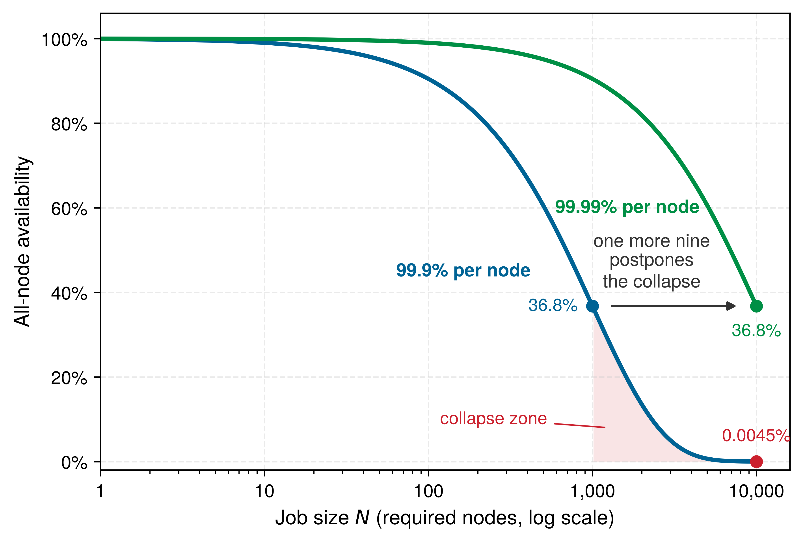
Поскольку одновременная доступность всех узлов падает к нулю по мере роста размера задачи до тысяч (зона коллапса на Рисунок 13), нереплицированная синхронная рабочая нагрузка не может полагаться на бесперебойную работу компонентов. Вероятность отказа в масштабе заменяет эту единственную цифру доступности узла полной моделью вероятности отказа — от интенсивностей отказов компонентов до вероятности того, что задача не успеет завершиться. Инженерный урок: отказ — обычный случай. В масштабе устойчивость вытесняет предотвращение как главную цель, и система обменивает абсолютное время безотказной работы на скорость восстановления, качество контрольных точек и автоматизированный ремонт.
↪ Переход от удержания каждого компонента в работе к парку, автоматически восстанавливающемуся при отказах компонентов, рассматривается в Отказоустойчивость.
Контрольная точка 1.3: Императив масштаба
Эти вопросы проверяют, сместилось ли мышление о масштабе с локального исполнения на распределённые ограничения:
1.4.2 Физические границы распределённого состояния
Масштаб вынуждает к распределению: ни одна машина не даёт вычислений, требуемых крупнейшим моделям, и ни одна централизованная система не может собрать все источники данных, генерируемые глобальной пользовательской базой. Однако координация вычислений между физически разнесёнными машинами, связанными сетями с конечной пропускной способностью, порождает логические ограничения, которые не устранима никакой инженерией. Первое проявляется внутри дата-центров, где синхронное обучение должно выбирать, сколько согласованности сохранять при разбиениях и отказах. Второе проявляется на краю сети (edge), где тот же выбор возвращается в более суровых условиях, потому что сами устройства ненадёжны, ограничены по энергии и подчинены политикам.
Реальность теоремы CAP
Когда работник становится недостижимым посреди шага распределённого обучения, среда исполнения сталкивается с немедленным выбором: приостановить всю задачу, пока работник не вернётся или не будет заменён, либо продолжать обновление модели без его вклада. Теорема CAP8 формулирует такой же вынужденный выбор для реплицируемых данных. Она устанавливает, что распределённая система в сети без временных границ после того, как разбиение разделит эту сеть, не может гарантировать одновременно атомарную согласованность (каждое чтение возвращает последнюю завершённую запись) и доступность (в смысле теоремы — каждый запрос к работающему узлу получает ответ). Устойчивость к разбиению описывает сетевое условие, при котором применим этот компромисс, а не третье взаимозаменяемое свойство, от которого система может отказаться.
Обучение — это не реплицированная база данных, а свежесть градиентов — не атомарная согласованность из теоремы, поэтому теорема не применима напрямую, тем не менее при отказе обучение сталкивается с тем же вынужденным выбором. Синхронное обучение выбирает общее актуальное состояние модели, поэтому весь шаг останавливается, когда требуемый воркер становится недоступен. Асинхронное обучение делает противоположный компромисс, продолжая работу при наличии отстающих или недоступных воркеров ценой применения обновлений, вычисленных на устаревших версиях модели. Федеративное обучение выносит этот выбор доступности на границу сети, позволяя периодически подключающимся устройствам обучать локальные модели, которые временно расходятся между раундами.
Ограничения распределения на границе сети
Обсуждённые выше проблемы координации предполагают распределение в дата-центре, где машины работают в управляемых сооружениях. На границе сети эти проблемы обостряются по всем направлениям. Миллиарды смартфонов и устройств IoT работают в неконтролируемых средах с ненадёжной связью и ограниченным энергопитанием. Ограничения приватности, согласия или политики могут запрещать выгрузку сырых данных с устройства, что делает федеративное обучение естественной архитектурой (McMahan и др. 2017 г.). Прерывистая связность требует политики участия, которая может отбирать доступные в данный момент устройства для раунда или допускать запоздавшие обновления по заявленным правилам. Хранение сырых данных локально само по себе не защищает информацию, раскрываемую через обновления модели. Бюджеты устройств и модель угроз определяют, уместны ли дополнительное сжатие, механизмы приватности или локальное исполнение.
1.4.3 Управление и системный риск в масштабе
Масштаб и распределённость усиливают последствия за пределами инженерии. Когда система обслуживает миллиарды пользователей, техническая ошибка становится общественным риском. Такая амплификация расширяет зону последствий сбоев управления; меньшим развёртываниям по-прежнему нужны средства контроля, соразмерные их назначению и потенциальному вреду. Управление функционирует как плоскость контроля парка машинного обучения — слой, решающий, что парк может оптимизировать и развёртывать, а не набор внешних правил.
Эта плоскость контроля прежде всего должна защищать парк от угроз безопасности, которые становятся всё более прибыльными для атакующих в производственном масштабе. Атаки извлечения модели крадут запатентованную интеллектуальную собственность через обычные запросы к API, а отравление данных разрушает конвейер обучения изнутри, чтобы изменить выученное поведение; одна из целей — бэкдор, скрытое поведение, активирующееся на выбранном входе. В масштабе парка эти угрозы становятся экономически привлекательными целями для квалифицированных атакующих. Защита парка требует систематических подходов: средств контроля доступа, дифференциальной приватности (калиброванного шума, ограничивающего, насколько сильно одна обучающая запись может влиять на то, что раскрывает модель) и непрерывного поведенческого мониторинга — всё это далеко выходит за рамки традиционной периметровой безопасности.
↪ Защита от отравления данных, извлечения модели и инверсии градиентов в распределённых инфраструктурах развивается в Безопасность и приватность.
Та же плоскость контроля должна делать парк проверяемым. Системы, работающие в масштабе, привлекают внимание регуляторов. Режимы наподобие EU AI Act и локальных законов о приватности превращают проверяемость — способность восстановить задним числом, какие данные, код и решения породили поведение модели, — в архитектурное требование для многих развёртываний. Аудит того, не поглотила ли запрещённые данные модель, обученная на 10 000 GPU, требует сквозного отслеживания происхождения данных, поддержанного средствами контроля, фиксирующими приём данных и последующие преобразования. Запись о происхождении не может установить отсутствие входов, которые никогда не были записаны. Генерация понятного человеку объяснения рекомендации, выданной в рамках бюджета хвостовой задержки в десятки миллисекунд — ограничения на то, сколько могут длиться самые медленные запросы, — требует техник, заложенных в архитектуру обслуживания. Выполнение этих требований предполагает технические возможности (журналы аудита, тестирование на смещения и управление согласиями), встроенные в инфраструктуру с самого начала.
Помимо юридического соответствия, парк машинного обучения несёт этические обязательства. Рекомендательные алгоритмы формируют общественную дискуссию; алгоритмы найма влияют на средства к существованию. Такие системы редко отказывают громко; вред накапливается беззвучно через смещения и поляризацию, без журнала сбоев. Смещение в широко используемой фундаментальной модели может распространиться на множество построенных на ней систем. Responsible AI превращает требования справедливости, прозрачности и подотчётности в операционные инварианты с определёнными доказательствами, владельцами и реакциями. Нарушение может потребовать удержания релиза, направления затронутых решений на проверку или приостановки небезопасной операции; реакция должна сдерживать соответствующий вред.
↪ Жизненный цикл гарантий, превращающий требования responsible AI в доказательства, подотчётных владельцев и полномочия запускать или останавливать систему, развивается в Жизненный цикл управления и assurance.
Вместе эти физические, логические и общественные ограничения определяют рабочий конверт парка. Превращение их в действенные системные решения требует диагностической таксономии, способной изолировать, на что теряется время исполнения: на локальную арифметику, передачу по сети или накладные расходы оркестрации.
1.5 Таксономия C
Простой ускоритель не идентифицирует своё узкое место сам. Он может ждать локальных операндов, передачи градиента или отказавшего пира. Оптика C
↪ Таксономия D·A·M как полный одноузловой фреймворк с диагностической сводкой, границей roofline и оценочной таблицей развивается в Одномашинные основы.
Когда рабочая нагрузка растягивается на тысячи связанных узлов, узкое место исполнения смещается. Аппаратное обеспечение дата-центров закупается и подключается кабелями вокруг трёх физических столпов: Compute, Network и Storage. Во время исполнения, однако, распределённое выполнение тратит реальное время в трёх различных операционных измерениях: Compute (
Каждое измерение оставляет разные свидетельства. Предположим, время шага обучающего задания выросло наполовину после удвоения кластера. Если время внутри ядер каждого узла выросло, а использование модельных FLOPs (MFU) — доля пикового арифметического пропускная способность, затрачиваемая на собственные операции модели, — упало и счётчики пропускной способности памяти насытились, ответственно локальное исполнение. Если выросли утилизация линков и тайминги коллективов — ответственны передачи; если выросли ожидания барьеров и записи о восстановлении — координация. Три диагноза требуют разных вмешательств, и оптимизация не того механизма оставляет сквозное узкое место на месте. Как и в одноузловых системах, управляющим пределом является связывающее ограничение: узкое место, устранение которого даёт сквозное сокращение времени обучения или задержки обслуживания. Поэтому таксономия C
Определение 1.2: Таксономия C³
Таксономия C
- Значимость: Диагностическая сила конкретна ещё до изучения сложных распределённых трассировок. Если ускорители вычисляют при низком MFU из-за голода тензорных ядер по локальным операндам или неслиянных ядер, связывающая ось — Compute (
). Если ускорители простаивают в ожидании передач градиентов AllReduce или тензоров активаций через сетевую инфраструктуру, связывающая ось — Communication ( ). Если прогресс останавливается из-за барьерных ожиданий, порождённых отстающими, откатов восстановления узлов или вытеснений при gang-планировании (которое выделяет всех воркеров задания разом или ни одного), связывающая ось — Coordination ( ). - Различие: В отличие от категорий закупок дата-центров (Compute, Network, Storage), классифицирующих физические аппаратные активы, таксономия C
классифицирует стоимость исполнения во время работы. Storage не исполняет модельную арифметику; скорее, он служит постоянным физическим субстратом для всех трёх измерений (локальный NVMe в , стриминг удалённых датасетов в и durable-контрольные точки в ). - Типичная ошибка: Считать три измерения независимыми переменными. Обновление до более быстрых ускорителей (
) часто превращает задание, ограниченное вычислениями, в задание, ограниченное коммуникацией ( ). Шардирование состояний модели для устранения избыточности памяти ( ) увеличивает объём коллективной коммуникации ( ) и сложность координации состояний ( ). Измерения движутся вместе.
1.5.1 Три измерения парка
Каждое измерение таксономии C
Вычислительный субстрат узла
Когда операнды не достигают арифметических устройств узла достаточно быстро, чтобы загружать тензорные ядра, Compute (
↪ Стена памяти — от пропускной способности высокополосной памяти (HBM) до модели «крыши» (Roofline), локализующей её для одного ускорителя, — развивается в Стена памяти.
Сетевой коммуникационный хребет
Когда передачи градиентов, активаций или шардов датасета насыщают конечную бисекционную пропускную способность кластера, они упираются в сетевую стену и вскрывают время коммуникации (
Слой координации и оркестрации
Поскольку синхронное задание ждёт самого медленного требуемого участника, один отстающий или отказ узла может остановить тысячи здоровых пиров, даже когда и локальные ядра, и сетевые линки имеют запас ёмкости. Coordination (
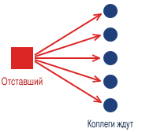
Один отстающий удерживает каждого синхронного пира.
1.5.2 Проекция из D·A·M в C
Когда модель или датасет, помещавшиеся на один сервер, разделяются на кластер, одноузловые компоненты D·A·M не исчезают; каждый из них порождает отдельный паттерн парковой работы вычислений, коммуникации и координации. Одноузловая таксономия D·A·M и парковая таксономия C
Растягивание алгоритма по узлам порождает коммуникацию (
1.5.3 Ландшафт пересечений C
Измерения взаимодействуют на своих парных пересечениях, где вмешательство по одной оси изменяет затраты по другой. На пересечении вычислений и коммуникации (
В центре (

Диаграмма упорядочивает конкурирующие объяснения одной и той же наблюдаемой задержки. Диагностика может начаться с одного измерения или со связанного механизма, например трафика контрольных точек, задерживающего коллектив. Свидетельства определяют, какое взаимодействие исследовать; диаграмма не предписывает порядок, в котором должны оптимизироваться измерения. Каждая последующая глава использует фигуру C
↪ Беззвучное повреждение данных и проверки, ловящие его по всему парку, развиваются в Проверки и верификация против незаметного повреждения данных.
1.5.4 Закон парка
Ландшафт пересечений C
Здесь
— член Compute (вычисления, ) в предположении идеальной делимости локальной арифметики для фиксированной рабочей нагрузки, распределённой по устройствам. — член Communication (коммуникация, ), учитывающий время передачи по сети градиентов, активаций и фрагментов параметров через сетевой fabric. — член Coordination (координация, ), учитывающий время, потребляемое барьерной семантикой и ожиданием отстающих, а также среднюю долю каждого шага в затратах уровня запуска, таких как решения планировщика кластера и восстановление после отказов. — член Overlap (перекрытие, , , ), представляющий коммуникацию или координацию, скрытую за полезными вычислениями с помощью таких приёмов, как чередование прямой и обратной работы между стадиями конвейера, выполнение передач в отдельных потоках исполнения и асинхронная запись контрольных точек.
У члена Compute есть две трактовки, и анализ должен указывать, какую из них он использует. Используемая ниже арифметическая идеализация предполагает, что локальная память способна поставлять операнды достаточно быстро, чтобы поддерживать моделируемую скорость вычислений, поэтому член учитывает только арифметику. Измеренный эталон локального исполнения может вместо этого включать в член Compute локальные простои памяти и накладные расходы на диспетчеризацию — при условии, что эти затраты делятся вместе с работой, как предполагается.
Удвоение числа устройств показывает, почему вычитание важно. Локальный вычислительный член падает до
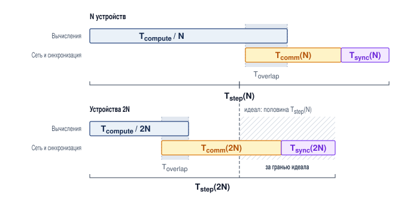
Слабое масштабирование (рост рабочей нагрузки вместе с числом устройств), дисбаланс нагрузки, изменения ёмкости памяти и алгоритмические изменения требуют модификации этих членов, а не рассмотрения
Эта декомпозиция — диагностический инструмент. Когда
Доля вычислительного времени описывает, как одна конфигурация из
↪ Компонентная декомпозиция, отображающая каждый член
Системный взгляд 1.1: Распределённая ловушка Амдала
Закон парка применяет рассуждение Амдала (Amdahl 1967 г.) к эксперименту с сильным масштабированием: фиксированный объём полезной работы делится между большим числом устройств, при этом члены коммуникации и координации измеряются для этой конфигурации. Распространённое упрощение трактует измеренную долю сети в 20 процентов как потолок ускорения 5
У эффективности парка есть несколько мер, и каждая отвечает на свой вопрос:
- Процент от пика сравнивает достигнутую арифметическую пропускную способность с пиковой пропускной способностью за заявленный интервал измерения, и результат зависит от того, что считается арифметикой.
- MFU — это процент от пика, учитывающий только собственную прямую и обратную работу модели; примерно 20 percent у GPT-3 — мера такого рода. Оценка GPT-3 усредняется по всему обучающему запуску, поэтому она включает время простоя внутри этого интервала; измерение, ограниченное активными ядрами, использует другой знаменатель.
- Утилизация аппаратных FLOPs — процент от пика, учитывающий каждую выполненную операцию, включая активации, отброшенные для экономии памяти и пересчитанные при обратном проходе. Показатель Megatron-LM 52 percent — мера такого рода, поэтому он выше, чем MFU сопоставимых запусков, который по отчёту PaLM составляет 30.2 percent для Megatron-Turing NLG и 46.2 percent для PaLM (Chowdhery и др. 2022 г.).
- Доля вычислительного времени спрашивает, какая часть одного шага принадлежит моделируемому члену локального исполнения.
- Эффективность масштабирования спрашивает, насколько близко
устройств подходят к -кратному ускорению по сравнению с одним. - Goodput расширяет окно с одного шага на весь запуск, дисконтируя работу, потерянную из-за отказов и повторённую после перезапусков; сообщённый Meta показатель эффективного времени обучения более 90 percent для Llama 3 — мера такого рода.
- Goodput продуктивности ML от Google носит то же имя, но отвечает на вопрос уровня всего парка: какая доля ёмкости превращается в полезную работу — как произведение goodput планирования, среды исполнения и программы (Wongpanich и др. 2025 г.). Полезная производительность систем машинного обучения определяет три множителя и границу, на которой каждый из них учитывает потери.
Парк может показывать высокие результаты по одной мере и низкие по другой, поэтому утверждение об эффективности парка должно называть используемую меру и интервал измерения.
Закон парка, доля вычислительного времени и эффективность масштабирования вместе описывают временную сторону эффективности парка. Они отделяют моделируемое локальное исполнение от экспонированных затрат на коммуникацию и синхронизацию и сравнивают полученное время шага с одноустройственной базой. У эффективности парка есть и энергетическая сторона, потому что каждая экспонированная передача и каждый простаивающий ускоритель всё равно потребляют мощность.
1.5.5 Граница энергетического учёта
Пока Закон парка учитывает время, сравнение конструкций парка по энергии требует фиксированной границы энергетического учёта — множества потребителей энергии, за которые chargéна каждая конструкция в сравнении. Фиксированной остаётся именно граница, а не какое-либо конкретное значение эффективности. Уравнение 5 определяет энергетическую продуктивность парка (
где
↪ Эффективность использования энергии (PUE) — отношение полной энергии инфраструктуры (включая охлаждение и преобразование мощности) к энергии IT — и то, что она не учитывает, развиваются в Метрики энергопотребления уровня инфраструктуры.
Эталонная задача на 175B связывает временной и энергетический балансы, поскольку каждая секунда видимой коммуникации или простоя конвейера не только задерживает шаг, но и удерживает ускорители и линии связи в режиме потребления энергии. Ноутбук 1.1 вычисляет обе стоимости для этой задачи на 1,024 и на 8,192 GPU.
![Две горизонтальные полосы, каждая — смоделированный шаг обучения той же задачи, растянутый на всю ширину. Полоса 1 024 GPU с подписью 8.7 s состоит на 83 процента из синего сегмента вычислений с тонкими янтарным сегментом коммуникации и фиолетовым сегментом простоя конвейера справа. Полоса 8 192 GPU с подписью 1.6 s состоит на 57 процентов из вычислений, с тонким янтарным сегментом коммуникации и фиолетовым сегментом простоя, занимающим треть полосы. Легенда подписывает янтарный и фиолетовый сегменты.](images/svg/vol2_introduction_coordination_tax.svg)
Распределение того же батча по 8× большему числу GPU сокращает вычисления до 57 percent смоделированного шага — с 83 percent.
Инженерный расчёт 1.1: Затраты времени и энергии на горизонтальное масштабирование
Задача: Эталонная задача на 175B выполняется на 1,024 GPU H100 в виде 16 реплик по 64 GPU, с глобальным батчем 1,536 последовательностей на шаг. На 8,192 GPU тот же батч распределяется по 128 репликам по 12 последовательностей каждая вместо 96. Как меняются между двумя кластерами смоделированная доля времени вычислений и энергия одного шага?
Физика: Используемая здесь модель шага делит каждый шаг на локальные вычисления реплики, тензорно-параллельные обмены внутри каждого узла, обмен градиентами между параллельными по данным ветвями через fabric сети и простой конвейера — время, когда стадии простаивают, пока конвейер заполняется и опустошается. Обмен градиентами выполняется во время обратного прохода, и модель прячет 85 percent его за этими вычислениями, остальное остаётся видимым. Это смоделированные значения, а не измерения.
Анализ: На 1,024 GPU локальные вычисления занимают 7.25 s из 8.7 s шага. Тензорно-параллельные обмены добавляют 0.90 s, а простой конвейера — 0.53 s, при этом видимым остаётся лишь 0.03 s из 0.21 s обмена градиентами. Доля времени вычислений составляет 83 percent. На 8,192 GPU локальные вычисления падают до 0.91 s, а тензорно-параллельный трафик — до 0.11 s, потому что каждая реплика несёт меньше последовательностей. Обмен градиентами остаётся вблизи 0.22 s, а простой конвейера не сокращается вовсе, поскольку он задаётся временем прохождения одной последовательности через каждую стадию конвейера. При меньшем числе последовательностей, загружающих конвейер, это фиксированное время простоя заполняет 33 percent шага. Шаг сокращается лишь до 1.6 s — ускорение в 5.5× при росте числа GPU в 8×, а доля времени вычислений падает до 57 percent. Поскольку слагаемое вычислений — вся локальная нагрузка реплики, эта доля является одновременно и масштабируемой эффективностью шага: 0.83 и 0.57.
Энергетика: Оба кластера выполняют одно и то же обновление оптимизатора, поэтому полезные FLOPs в Уравнение 5 идентичны. При однократной оплате каждого переданного бита по цене 35 pJ/bit обмен градиентами стоит около 2.9 kJ энергии fabric сети на шаг на меньшем кластере и около 24.9 kJ на большем, потому что GPU в 8× раз больше, и каждый из них отправляет почти тот же срез градиента. Ускорители значат больше. Шаг занимает 8,921 GPU-секунд на меньшем кластере и 12,983{python} ReferenceStepAtScale.large_gpu_seconds_str` на большем, а ускоритель, простаивающий в пузыре конвейера или ожидающий обмена, продолжает потреблять мощность. Если каждый ускоритель потребляет сопоставимую мощность независимо от того, вычисляет он, обменивается или ждёт в пузыре, энергия парка на шаг растёт вместе с этими GPU-секундами, так что энергетическая эффективность падает по мере роста парка, даже если каждый шаг завершается раньше.
Системный вывод: Модель оценивает линии на полной пропускной способности, прячет фиксированную долю обмена градиентами, считает тензорно-параллельные обмены неперекрытыми и игнорирует отстающих, поэтому измеренный шаг на любом из масштабов может отличаться. Урок — в тренде. Добавление ускорителей при фиксированном батче пропорционально сокращает слагаемое вычислений, тогда как пузырь конвейера и обмен градиентами не сокращаются, так что видимая коммуникация и простой конвейера занимают растущую долю каждого шага. Глава 1.2.4 обнаруживает то же давление на стороне сети, где обмен градиентами вырастает с 6 percent до 53 percent баланса fabric.
↪ Почему пузырь конвейера растёт, когда каждая реплика получает меньше микробатчей, разбирается в Конвейерный параллелизм.
↪ Энергия, добавляемая к распределённому обучению видимыми коллективными операциями и простаивающими, остановленными синхронизацией ускорителями, измеряется в Оптимизация энергопотребления распределённых систем.
1.6 Стек парка и маяковые архетипы
Когда распределённый шаг останавливается из-за видимой коммуникации или синхронизации, Закон парка и размерности C
Шесть инженерных практик направляют решения на каждом поясе стека: сначала инструментарий, резерв запаса для восстановления и хвостовой задержки, ожидание миграции узких мест, отношение к отказу как к нормальному состоянию, умножение малых выигрышей эффективности по всему парку и совместное проектирование аппаратуры с алгоритмами. Например, более быстрые ускорители могут обнажить узкое место в сети; инструментарий выявляет эту миграцию, а совместное проектирование аппаратуры согласует fabric сети с рабочей нагрузкой. Практики описывают, как работает инженер парка. Принципы распределённых ML-систем — среди них то, что коммуникация может доминировать в шаге, и то, что отказ — рутинное явление, — описывают, что физика парка делает истинным, независимо от практики. Каждая часть книги устанавливает свою долю этих принципов. Шесть принципов распределённых МЛ-систем собирает их в шесть — по одной-две на каждую часть — и сопоставляет каждую с практикой, которую она требует.
1.6.1 Три системных архетипа
Один бенчмарк-нагрузка не может проверить каждый пояс стека парка, потому что плотная языковая модель, разреженный рекомендательный сервис и федеративное обучение на устройстве отказывают в совершенно разных местах. Три маяковых архетипа в масштабе повторяются по всей книге там, где они раскрывают центральное ограничение главы; ни одна глава не обязана втискивать все три в свой аргумент. Вместе они охватывают различные режимы C
Архетип A (GPT-4/Llama-3)
Состояние обучения плотной языковой модели с сотнями миллиардов параметров не помещается в память ускорителей одного сервера. Разбиение модели на тысячи ускорителей с помощью 3D-параллелизма (по данным, тензорного и конвейерного) рискует выставить достаточно трафика градиентов и активаций, чтобы сеть стала связывающим узким местом. GPT-4 и Llama 3 — авторегрессионные трансформерные архитектуры, стоящие за этим архетипом, — генерируют текст по одному токену за раз. В масштабе одного ускорителя авторегрессионные языковые модели — зонды пропускной способности памяти. В масштабе сотен миллиардов параметров, а в некоторых проприетарных системах, возможно, и больше, обучение требует устойчивых EFLOP/s вычислений, распределённых по тысячам и десяткам тысяч ускорителей. Обслуживание требует пропускной способности памяти, достаточной для загрузки миллиардов весов на каждый сгенерированный токен. Поскольку трафик градиентов и активаций пересекает сеть на каждом шаге, архетип A проверяет коммуникационное измерение C
Когда главе нужен конкретный экземпляр, архетип A — это плотный трансформер класса GPT-3 с 175B параметрами, выбранный потому, что его конфигурация опубликована, в отличие от GPT-4, обучаемый в смешанной точности с оптимизатором Adaptive Moment Estimation (Adam). Его состояние обучения занимает 16 байт на параметр (веса и градиенты BF16, главные веса FP32 и два момента Adam FP32), то есть 2.8 TB. Возобновляемая контрольная точка опускает градиенты и требует 14 байт на параметр, то есть 2.45 TB. Эталонный кластер — это 1,024 H100 GPUs, организованные как 128 узлов по 8 ускорителей в каждом. Каждый параллельный по данным воркер — это одна реплика модели, распределённая по 64 GPU, с тензорным параллелизмом по 8 GPU узла и конвейером глубиной 8 узлов, так что кластер содержит 16 реплик. Без шардирования состояние обучения составляет 43.8 GB на GPU, что помещается в память одного H100. Один шаг обучения — это одно обновление оптимизатора по глобальному батчу из 1,536 последовательностей (3,145,728 токенов) с одним редукцией градиентов по репликам, и смоделированный шаг занимает около 8.7 s. Глава, изучающая больший кластер или другую модель, явно указывает, как она варьирует этот эталон.
Архетип B (DLRM в масштабе)
Там, где плотная языковая модель тратит большую часть памяти на веса, используемые каждым токеном, производственный рекомендатель тратит память на разреженные таблицы эмбеддингов, достигающие 10 TB и более на сотнях узлов. Он обслуживает примерно 10 million запросов в секунду (QPS) в рамках бюджета хвостовой задержки <100 ms. DLRM — модель глубокого обучения для рекомендаций, опубликованная Meta как эталонная архитектура персонализированного ранжирования контента, — получает свою ёмкость от плотных матричных умножений, как и LLM, а также от больших таблиц эмбеддингов, отображающих миллиарды признаков пользователей и предметов в плотные векторы. Эти таблицы далеко превышают память любого отдельного ускорителя, поэтому они шардированы по устройствам, при этом каждый воркер обрабатывает свой срез батча запросов для плотных слоёв.
Поскольку запросы воркера ссылаются на строки эмбеддингов, хранящиеся на многих других устройствах, обслуживание и обучение должны координировать обмены AllToAll — коллективные операции, в которых каждый воркер отправляет отличное подмножество найденных векторов каждому другому воркеру через
Архетип C (федеративный MobileNet)
Обе эти рабочие нагрузки выполняются в управляемых центрах обработки данных. Федеративное обучение вместо этого обучает модель на миллионах разнообразных смартфонных устройств, чьи бюджеты энергопотребления лежат примерно в диапазоне от 2 W до 10 W (несколько ватт в устойчивом режиме с кратковременными всплесками до верхней границы диапазона), и при этом исходные пользовательские данные никогда не покидают устройство. MobileNet — семейство эффективных свёрточных нейронных сетей, спроектированных для выполнения на устройстве в условиях жёстких бюджетов памяти и энергии, — служит эталонной рабочей нагрузкой для этого варианта федеративного обучения. Датчики класса микроконтроллеров, работающие на сотнях килобайт памяти и милливаттах мощности, лежат на ещё более крайней позиции ниже этого архетипа.
В таксономии C
Три архетипа — это зондирующие ограничения, а не каталог семейств моделей. Случай LLM спрашивает, способна ли плотная синхронизация удерживать полезность тысяч ускорителей; случай DLRM — способна ли маршрутизация разреженных признаков уложиться в бюджеты хвостовой задержки; случай федеративного MobileNet — можно ли согласовать локальные ограничения устройств в статистически связное обновление. Каждая из трёх канонических рабочих нагрузок сопоставляет диагностический режим C
| Архетип | Диагностический режим C |
Парковая задача |
|---|---|---|
| Архетип A (GPT-4/Llama-3) | Коммуникация (в масштабе парка) | Разбить сотни миллиардов параметров, а потенциально и более крупные проприетарные модели, на тысячи и десятки тысяч GPU с помощью 3D-параллелизма так, чтобы сеть не стала узким местом. |
| Архетип B (DLRM в масштабе) | Координация (маршрутизация и размещение) | Шардировать таблицы эмбеддингов размером 10 TB+ на сотнях узлов; обрабатывать миллионы QPS с хвостовой задержкой <100 ms, управляя при этом маршрутизацией разреженных признаков, размещением шардов и обменами среди |
| Архетип C (федеративный MobileNet) | Вычисления (конверт отдельного устройства) | Координировать обучение на миллионах ограниченных по вычислениям, ненадёжных граничных устройств с помощью федеративных обновлений; исходные данные не могут покинуть устройство. |
1.7 Структура этого учебника
Решение этих трёх парковых задач требует восхождения по парковому стеку в порядке зависимостей, поскольку выборы, зафиксированные в физическом субстрате, ограничивают каждый алгоритм, среду исполнения и механизм управления, построенные поверх него. Поэтому последовательность глав — это карта зависимостей, а не перечень тем. Ограничения кремния, охлаждения и сети ограничивают разбиение обучения; алгоритмы с разбиением порождают обязательства по отказоустойчивости и оркестрации; эти механизмы поддерживают промышленную эксплуатацию. Требования текут и в обратную сторону: безопасность, управление и целевые показатели сервиса ограничивают, какие конструкции нижних слоёв допустимы. Часть I строит физический субстрат кластера, часть II координирует распределённое выполнение и восстановление после отказов, часть III эксплуатирует парк в производстве — от эффективности и обслуживания моделей до граничного развёртывания и операций, а часть IV обеспечивает инварианты управления, безопасности и устойчивости (Рисунок 16).
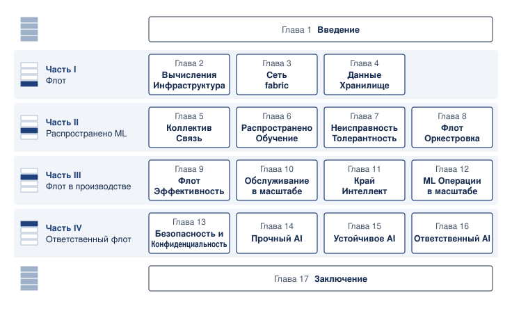
Инфраструктурная арка начинается с лимита, который не может игнорировать ни один алгоритм, потому что ни один сервер в отдельности не располагает достаточной памятью, энергией, охлаждением или вводом-выводом для обучения крупнейших моделей. Вычислительная инфраструктура поэтому начинает с кремния высокой плотности и физики дата-центра, Сетевой fabric превращает изолированные машины в градиентную шину масштаба кластера, а Хранение данных завершает субстрат, удерживая ускорители занятыми и не позволяя хранилищу стать скрытым узким местом.
Арка распределения начинается, когда физический парк уже существует и издержки координации становятся неизбежными. Разнесение вычислений по машинам порождает две новые проблемы: реплики должны обмениваться состоянием достаточно быстро, чтобы вести себя как один оптимизатор, а отказы становятся рутиной, а не исключением. Коллективная коммуникация развивает коммуникационные примитивы, связывающие независимые узлы в связный компьютер, и назначает цену каждому обмену. Распределённое обучение использует их для построения стратегий разбиения моделей с сотнями миллиардов и триллионами параметров. Отказоустойчивость ставит скорость восстановления выше времени безотказной работы отдельного узла. Оркестрация парка управляет мультитенантным кластером, где эти задачи нужно размещать, изолировать и перезапускать.
Арка производства загружает построенный парк реальными задачами и живым трафиком. Когда парк работает в производстве, связывающим вопросом становится уже не только время до окончания обучения, а то, остаются ли утилизация, задержка и пожизненная стоимость обслуживания в пределах рабочего конверта. Эффективность парка измеряет, какая доля ёмкости парка превращается в полезную работу — и в шаге обучения, и в обслуживающей реплике — и относит каждую потерю на счёт планирования, среды исполнения или программы. Обслуживание в масштабе превращает измеренную ёмкость каждой реплики в политику допуска, формирования батчей и маршрутизации для миллионов пользователей. Периферийный интеллект переносит обучение на смартфонные устройства, где бюджеты памяти, батареи и тепловыделения определяют, какую адаптацию они могут себе позволить. Эксплуатация систем машинного обучения в масштабе развивает общие механизмы управления (реестры, релизные шлюзы, мониторинг и учёт затрат), которые управляют сотнями моделей как одним парком.
Арка управления трактует ответственность как инженерный слой, а не послесловие. В глобальном масштабе технические ошибки становятся общественными опасностями: противники могут отравить данные или извлечь веса, входы открытого мира могут ломать хрупкие модели, потребление энергии становится парковым ограничением, а сбои управления способны превратить техническую возможность в социальный вред. Безопасность и приватность, Надёжный ИИ, Экологически устойчивый ИИ и Ответственный ИИ развивают эти обязательства как свойства системы, которые нужно проектировать, измерять и эксплуатировать.
1.8 Заблуждения и ловушки
Приведённые ниже заблуждения и ловушки описывают архитектурные ошибки, которые приводят к напрасной трате ресурсов разработки, недостижению целевых показателей производительности или развёртыванию систем, критически не соответствующих своим рабочим ограничениям. Каждая из них — паттерн, многократно наблюдавшийся при переходе от однопользовательского МЛ на одной машине к парку машинного обучения.
Заблуждение: Ускорители вдвое быстрее — вдвое короче шаг обучения.
Обновление ускорителя, меняющее только арифметическую пропускную способность, уменьшает член
Ловушка: Считать, что надёжные компоненты дают надёжную задачу.
MTBF одного GPU в 50,000 hours описывает деталь, которая редко выходит из строя. Однако синхронной задаче нужны все её детали одновременно. Как показано в Глава 1.1, задача на 25,000 GPUs имеет MTBF около 2 hours, то есть примерно 12 прерываний в день. Надёжность компонента характеризует одну деталь; разрыв надёжности (Глава 1.4.1) характеризует задачу, чья доступность экспоненциально падает с числом деталей, требующихся ей одновременно. Практики восстановления, подходящие одной машине, — ручной перезапуск и нечастые контрольные точки — не работают в масштабе парка, хотя ни одна отдельная деталь не стала менее надёжной.
Заблуждение: Требования к эффективности граничного развёртывания — просто уменьшенные версии облачных требований.
Это заблуждение трактует граничные системы как облачные системы с ограниченными ресурсами. Граничные устройства сталкиваются с качественно иными ограничениями. Например, беспилотный автомобиль, движущийся со скоростью 120 km/h, проезжает 3.33 m за каждый 100 ms задержки обработки, добавляя это расстояние к своей тормозной дистанции. Пока облачные развёртывания масштабируются до киловатт, смартфонное устройство, моделируемое архетипом C, выдерживает лишь несколько ватт. Облачная модель с точностью 95 процентов и задержкой 50 ms может оказаться непригодной на граничном устройстве, где троттлинг из-за нагрева увеличивает задержку до 200 ms и разряжает батарею меньше чем за час.
Ловушка: Трактовать вычислительный бюджет как прогноз производительности в реальном времени.
Эта ловушка, иногда называемая заблуждением о линейном масштабировании, смешивает полезную вычислительную работу со временем, необходимым для её выполнения. Эмпирическое соотношение потерь
1.9 Итоги
Планирование парка теперь разделяет два вопроса, которые практика одной машины могла смешивать. Законы масштабирования отвечают, сколько размера модели, данных и полезных вычислений требует целевой уровень качества; Закон парка отвечает, сколько времени парк затратит на выполнение этой работы. Диагностические навыки одиночной машины остаются необходимыми и в этом масштабе, но инженерная граница расширяется: парк может терять полезный прогресс из-за сетевых передач, несогласованного общего состояния или отказавших участников, даже когда его локальные ядра эффективны. Таксономия C
Основные выводы: Масштаб создаёт новую машину
- Больше устройств меняет инженерную границу: Распределение работы вводит общие зависимости от сети и отказов. Синхронное обучение связывает каждого воркера с одним общим шагом, поэтому один медленный или отказавший участник тормозит всю задачу. Локальная производительность остаётся необходимой, но решения по парку устройств должны также учитывать синхронизацию, восстановление, энергоподачу и управление в пределах этой расширенной границы.
- Коммуникация может съесть ускорение: Разделение фиксированной работы между ускорителями сокращает идеальное локальное время вычислений, но одновременно вскрывает издержки коммуникации и координации. Модель на 175 млрд параметров может переносить сотни гигабайт градиентов за один шаг. Сравнение интенсивности коммуникации — байтов, передаваемых на одну локальную операцию, — с точкой баланса сети показывает, что определяет время шага: локальные вычисления или сеть.
- Отказ становится устойчивым состоянием: Нереплицированная синхронная задача требует одновременной доступности всех необходимых компонентов, поэтому при независимых отказах компонентов её доступность падает экспоненциально с ростом размера задачи — до 36.8 percent при 1,000 требуемых узлах и иллюстративной доступности 99.9 percent каждого. В моделируемой задаче на 25,000 GPU эти отказы прерывают плотно связанное обучение каждые несколько часов, несмотря на долгий срок службы каждого GPU, поэтому контрольные точки, восстановление и наблюдаемость должны быть заложены в нормальную работу.
- Законы масштабирования задают спрос; Закон парка задаёт цену: В пределах подтверждённого режима ошибка падает по степенному закону от вычислений, данных и параметров, поэтому каждый следующий равный прирост качества требует непропорционально больше ресурсов, а compute-оптимальные планы наращивают параметры и токены одновременно. Эти законы говорят, какой объём работы стоит купить; Закон парка говорит, сколько времени парк потратит на её выполнение. Оценка на уровне задач, а не одной ошибки, устанавливает, оправдывает ли предсказанный прирост затраты ресурсов, и только compute-оптимальность обучения не гарантирует наименьшую стоимость владения при обслуживании в течение жизненного цикла.
- C
расширяет локальную интуицию: Линза «Данные, Алгоритм, Машина» описывает рабочую нагрузку и подложку; «Вычисления, Коммуникация и Координация» вскрывают издержки исполнения в парке. Закон парка связывает полезную локальную работу с затратами на передачу, синхронизацию и перекрытие при изменении числа устройств, а стек парка указывает слой, к которому относится каждое решение. - Влияние требует управляющего контура: Системы фундаментального масштаба усиливают сбои безопасности, приватности, справедливости и политики на больших группах пользователей. Управление (governance) — не приложение к инфраструктуре; это механизм, решающий, что парку разрешено оптимизировать и развёртывать.
Исходный тезис этой книги состоит в том, что масштаб может вынести ограничивающий фактор за пределы узла. Локальное ускорение, следовательно, — свидетельство об одном компоненте, но ещё не доказательство того, что парк даёт больше полезного прогресса. Инженерное суждение требует проследить это изменение через коммуникацию, координацию и операционные ограничения миссии, прежде чем признавать его улучшением.
Дальнейшие шаги: От требований к кремнию
Законы масштабирования задают, сколько работы требует модель на переднем крае, стены «момента масштаба» отмечают, где этот спрос упирается в физические пределы, а Закон парка назначает цену каждому распределённому шагу. Эти требования говорят, что должен выдерживать парк, но не какое оборудование это выдержит. Вычислительная инфраструктура обращается к этому оборудованию. Глава начинается там, где законы масштабирования оставляют растущую модель — слишком большую для памяти одного ускорителя, — и поднимается от ускорителя через узел и стойку к поду. На каждом уровне задаётся вопрос, какой физический ресурс исчерпается первым: пропускная способность памяти, энергопотребление и охлаждение, пропускная способность коммуникации или подверженность отказам. Эти пределы образуют строку Facility and Accelerators в основании стека парка — подложку, на которой строятся все последующие главы.
использованная литература
AI, Meta. 2022 г. Building the Most Powerful AI Supercomputer: Meta’s AI Research SuperCluster. Meta AI Blog. https://ai.meta.com/blog/ai-rsc/.
Amdahl, Gene M. 1967 г. «Validity of the single processor approach to achieving large scale computing capabilities». Proceedings of the April 18-20, 1967, spring joint computer conference on - AFIPS ’67 (Spring), AFIPS ’67 (Spring), 483–85. https://doi.org/10.1145/1465482.1465560.
Amodei, Dario, и Danny Hernandez. 2018 г. «AI and Compute». OpenAI Blog 2. https://openai.com/research/ai-and-compute.
Barroso, Luiz André, Urs Hölzle, и Parthasarathy Ranganathan. 2019 г. The Datacenter as a Computer: Designing Warehouse-Scale Machines. Synthesis Lectures on Computer Architecture. Springer International Publishing. https://doi.org/10.1007/978-3-031-01761-2.
Brewer, Eric A. 2000 г. «Towards robust distributed systems (abstract)». Proceedings of the nineteenth annual ACM symposium on Principles of distributed computing, 7. https://doi.org/10.1145/343477.343502.
Brown, Tom B., Benjamin Mann, Nick Ryder, и др. 2020 г. «Language Models are Few-Shot Learners». Advances in Neural Information Processing Systems 33: 1877–901. https://doi.org/10.48550/arxiv.2005.14165.
Chowdhery, Aakanksha, Sharan Narang, Jacob Devlin, и др. 2022 г. «PaLM: Scaling Language Modeling with Pathways». arXiv preprint arXiv:2204.02311. http://arxiv.org/abs/2204.02311v5.
Dean, Jeffrey, и Sanjay Ghemawat. 2004 г. «MapReduce: Simplified Data Processing on Large Clusters». Proceedings of the 6th Symposium on Operating Systems Design and Implementation (OSDI), 137–50.https://www.usenix.org/legacy/publications/library/proceedings/osdi04/tech/full_papers/dean/dean.pdf .
Devlin, Jacob, Ming-Wei Chang, Kenton Lee, и Kristina Toutanova. 2019 г. «BERT: Pre-training of Deep Bidirectional Transformers for Language Understanding». Proceedings of the 2019 Conference of the North American Chapter of the Association for Computational Linguistics: Human Language Technologies, 4171–86. https://doi.org/10.18653/v1/n19-1423.
Dubey, Abhimanyu, Abhinav Jauhri, Abhinav Pandey, Abhishek Kadian, и др. 2024 г. The Llama 3 Herd of Models. arXiv preprint arXiv:2407.21783. https://arxiv.org/abs/2407.21783.
Epoch AI. 2026 г. Notable AI Models. https://epoch.ai/data/notable-ai-models.
Gilbert, Seth, и Nancy Lynch. 2002 г. «Brewer’s conjecture and the feasibility of consistent, available, partition-tolerant web services». ACM SIGACT News 33 (2): 51–59. https://doi.org/10.1145/564585.564601.
Hestness, Joel, Sharan Narang, Newsha Ardalani, и др. 2017 г. «Deep Learning Scaling is Predictable, Empirically». arXiv preprint arXiv:1712.00409. http://arxiv.org/abs/1712.00409v1.
Hoffmann, Jordan, Sebastian Borgeaud, Arthur Mensch, и др. 2022 г. «Training Compute-Optimal Large Language Models». Advances in Neural Information Processing Systems (NeurIPS) 35: 30016–30. https://doi.org/10.52202/068431-2176.
Jouppi, Norman P., Cliff Young, Nishant Patil, и др. 2017 г. «In-Datacenter Performance Analysis of a Tensor Processing Unit». Proceedings of the 44th Annual International Symposium on Computer Architecture, ISCA ’17, 1–12. https://doi.org/10.1145/3079856.3080246.
Jouppi, Norm, George Kurian, Sheng Li, и др. 2023 г. «TPU v4: An Optically Reconfigurable Supercomputer for Machine Learning With Hardware Support for Embeddings». Proceedings of the 50th Annual International Symposium on Computer Architecture, 1–14. https://doi.org/10.1145/3579371.3589350.
Kaplan, Jared, Sam McCandlish, Tom Henighan, и др. 2020 г. «Scaling Laws for Neural Language Models». ArXiv preprint abs/2001.08361. http://arxiv.org/abs/2001.08361v1.
Krizhevsky, Alex, Ilya Sutskever, и Geoffrey E. Hinton. 2012 г. «ImageNet Classification with Deep Convolutional Neural Networks». Advances in Neural Information Processing Systems (NeurIPS) 25. https://proceedings.neurips.cc/paper/2012/hash/c399862d3b9d6b76c8436e924a68c45b-Abstract.html.
Langston, Jennifer. 2020 г. Microsoft Announces New Supercomputer, Lays Out Vision for Future AI Work. Microsoft Source. https://news.microsoft.com/source/features/ai/openai-azure-supercomputer/.
Li, M., D. G. Andersen, J. W. Park, и др. 2014 г. «Scaling Distributed Machine Learning With the Parameter Server». Proceedings of the 2014 International Conference on Big Data Science and Computing, 583–98. https://doi.org/10.1145/2640087.2644155.
McMahan, Brendan, Eider Moore, Daniel Ramage, Seth Hampson, и Blaise Agüera y Arcas. 2017 г. «Communication-Efficient Learning of Deep Networks from Decentralized Data». International Conference on Artificial Intelligence and Statistics (AISTATS), Proceedings of Machine Learning Research, т. 54: 1273–82. http://proceedings.mlr.press/v54/mcmahan17a.html.
Microsoft. 2025 г. Inside the World’s Most Powerful AI Datacenter. The Official Microsoft Blog. https://blogs.microsoft.com/blog/2025/09/18/inside-the-worlds-most-powerful-ai-datacenter/.
Narayanan, Deepak, Mohammad Shoeybi, Jared Casper, и др. 2021 г. «Efficient large-scale language model training on GPU clusters using Megatron-LM». Proceedings of the International Conference for High Performance Computing, Networking, Storage and Analysis, 1–15. https://doi.org/10.1145/3458817.3476209.
OpenAI, Josh Achiam, Steven Adler, и др. 2023 г. «GPT-4 Technical Report». arXiv preprint arXiv:2303.08774, advance online publication. https://doi.org/10.48550/arXiv.2303.08774.
Ouyang, L., J. Wu, X. Jiang, и др. 2022 г. «Training language models to follow instructions with human feedback». Advances in Neural Information Processing Systems (NeurIPS) 35: 27730–44. https://doi.org/10.52202/068431-2011.
Patel, Dylan, и Gerald Wong. 2023 г. GPT-4 Architecture, Infrastructure, Training Dataset, Costs, Vision, MoE. SemiAnalysis Blog. https://www.semianalysis.com/p/gpt-4-architecture-infrastructure.
Patterson, David, Joseph Gonzalez, Quoc Le, и др. 2021 г. «Carbon Emissions and Large Neural Network Training». arXiv preprint arXiv:2104.10350. https://arxiv.org/abs/2104.10350.
Rajbhandari, Samyam, Jeff Rasley, Olatunji Ruwase, и Yuxiong He. 2020 г. «ZeRO: Memory Optimizations Toward Training Trillion Parameter Models». SC20: International Conference for High Performance Computing, Networking, Storage and Analysis, 1–16. https://doi.org/10.1109/sc41405.2020.00024.
Sergeev, Alexander, и Mike Del Balso. 2018 г. «Horovod: fast and easy distributed deep learning in TensorFlow». CoRR abs/1802.05799. http://arxiv.org/abs/1802.05799v3.
Sevilla, Jaime, Lennart Heim, Anson Ho, Tamay Besiroglu, Marius Hobbhahn, и Pablo Villalobos. 2022 г. «Compute Trends Across Three Eras of Machine Learning». 2022 International Joint Conference on Neural Networks (IJCNN), 1–8. https://doi.org/10.1109/ijcnn55064.2022.9891914.
Shoeybi, Mohammad, Mostofa Patwary, Raul Puri, Patrick LeGresley, Jared Casper, и Bryan Catanzaro. 2019 г. «Megatron-LM: Training Multi-Billion Parameter Language Models Using Model Parallelism». arXiv preprint arXiv:1909.08053. http://arxiv.org/abs/1909.08053v4.
Snell, Charlie, Jaehoon Lee, Kelvin Xu, и Aviral Kumar. 2025 г. «Scaling LLM Test-Time Compute Optimally can be More Effective than Scaling Model Parameters». Proceedings of the 13th International Conference on Learning Representations (ICLR). https://arxiv.org/abs/2408.03314.
Sutton, Richard S. 2019 г. «The Bitter Lesson». incompleteideas.net 43. http://www.incompleteideas.net/IncIdeas/BitterLesson.html.
Wongpanich, A., T. Oguntebi, J. Baiocchi Paredes, и др. 2025 г. Machine Learning Fleet Efficiency: Analyzing and Optimizing Large-Scale Google TPU Systems with ML Productivity Goodput. https://arxiv.org/abs/2502.06982.
Zaharia, M., R. S. Xin, P. Wendell, и др. 2016 г. «Apache Spark: A Unified Engine for Big Data Processing». Communications of the ACM 59 (11): 56–65. https://doi.org/10.1145/2934664.
Zu, Y., A. Ghaffarkhah, H.-V. Dang, и др. 2024 г. «Resiliency at Scale: Managing Google’s TPUv4 Machine Learning Supercomputer». 21st USENIX Symposium on Networked Systems Design and Implementation (NSDI 24), 761–74. https://www.usenix.org/conference/nsdi24/presentation/zu.
Сноски
Тензорный процессор (TPU): специализированная заказная интегральная схема (ASIC) Google для машинного обучения, матричные блоки которой представляют собой систолические массивы — сетки ячеек умножения-накопления, передающие данные между соседними ячейками (Jouppi и др. 2017 г.). В масштабе парка межчиповая сеть важна не меньше самого массива: TPU v4 соединяет свои чипы оптически реконфигурируемой связностью, так что топологию сети, а не только скорость каждого чипа, определяет, насколько хорошо множество ускорителей сотрудничает (Jouppi и др. 2023 г.).↩ Вернуться к тексту
Частоты аппаратных отказов в масштабе: арифметика ниже использует предполагаемое среднее время наработки на отказ одного GPU и независимость отказов, чтобы показать, как частота прерываний растёт с размером парка. Производственные прерывания задач включают программные, сетевые и регламентные причины наряду с отказами ускорителей. Отчёт Meta о Llama 3 даёт наблюдаемый пример этой более широкой категории прерываний (Dubey и др. 2024 г.); он не устанавливает универсальную годовую частоту отказов GPU.↩ Вернуться к тексту
InfiniBand: дата-центровская соединительная технология, определяющая черта которой для МО — удалённый прямой доступ к памяти (RDMA), обходящий ядро ОС и перемещающий данные напрямую между памятью приложений на разных машинах с задержкой микросекундного масштаба. InfiniBand HDR обеспечивает около 25 GB/s полосной пропускной способности на линию, NDR — около 50 GB/s; эта полосная пропускная способность относительно вычислений, выполняемых каждым исполнителем между обменами, решает, будет ли обучение больших моделей ограничено вычислениями или коммуникацией. Ethernet с поддержкой RDMA (RoCE) теперь предлагает сопоставимые полосные скорости.↩ Вернуться к тексту
Компьютер масштаба склада (WSC): Barroso и др. (2019 г.) рассматривают сам дата-центр как компьютер. Для МЛ-парков доставка питания, топология охлаждения, компоновка оптической сети и бисекционная пропускная способность становятся ограничениями первого порядка; лимит мощности предприятия в 100 MW может ограничить пропускную способность обучения раньше, чем это сделает TFLOP/s любого отдельного ускорителя.↩ Вернуться к тексту
Токены: Подсловные единицы, порождаемые алгоритмами вроде байтового кодирования пар (byte-pair encoding), которое итеративно объединяет самые частые пары символов в корпусе. Размер словаря токенов создаёт прямую системную дилемму: более крупные словари могут сократить длину последовательностей для некоторых языков и доменов, но они увеличивают таблицу эмбеддингов примерно пропорционально размеру словаря. В GPT-3 использовался словарь в 50,257 токенов; переход к словарям в 100K+ токенов в более новых моделях, следовательно, разменивает эффективность токенизации на дополнительную память под эмбеддинги.↩ Вернуться к тексту
FLOPs vs. FLOP/s: FLOPs обозначает суммарный объём вычислительной работы (число выполненных операций), а FLOP/s — пропускную способность оборудования (операций в секунду); смешение этих понятий ведёт к неверным оценкам стоимости. GPT-3 потребовал 3.14 × 10²³ FLOPs работы; одна A100 обеспечивает 312 TFLOP/s пропускной способности. Деление объёма работы на пиковую пропускную способность даёт идеальное время выполнения — те самые примерно 32 лет на одной A100, вычисленные в момент рассмотрения масштаба. Фактическое время составляет приблизительно
, где утилизация оборудования — достигнутая доля пиковой пропускной способности, поэтому утилизация ниже единицы умножает идеальное время на .↩ Вернуться к тексту Насыщение законов масштабирования: степенные зависимости с базовым слагаемым потерь приближаются к этому пределу, а не предсказывают безграничное снижение потерь. Полезность на downstream-задачах также может перестать расти, даже если подогнанное значение потерь уменьшается. Этот разрыв между потерями и полезностью мотивирует проверку эффективности использования данных или сжатия модели по полезности на задаче и ресурсной стоимости; ни одна из этих техник не гарантирует преодоления подлинного информационного предела.↩ Вернуться к тексту
Теорема CAP (согласованность, доступность, устойчивость к разделению) (теорема Брюера): Брюер сформулировал гипотезу (Brewer 2000 г.), а Gilbert и Lynch (2002 г.) позже доказал её для асинхронных сетей, то есть сетей без временных гарантий.↩ Вернуться к тексту